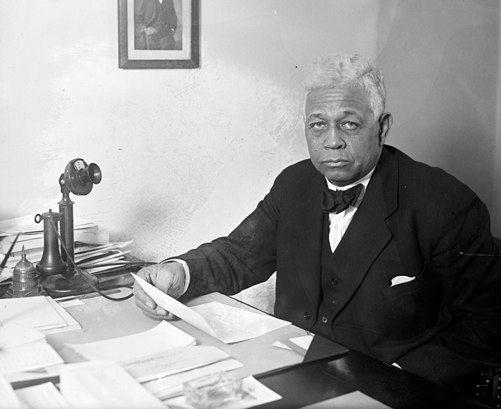

The 1920s were a period of economic growth and transition. Real wages for most workers increased, while stock prices advanced as much during the 1920s as they had in the previous three decades. The US census of 1920 revealed that, for the first time, a majority of Americans lived in cities and towns with at least 2,500 residents. The 1920s also boasted a uniquely modern culture that celebrated the fast pace of cosmopolitan life. Yet in many ways, the United States was still mired in the past. Progressive reformers sought to publicize the tragedy of preventable diseases and child mortality among the poor. However, it was not until after the discovery that millions of draftees in World War I were malnourished and medically unfit for military service that these reformers had the attention of the federal government. Despite recent advances in medicine, childbirth remained the second-leading cause of death among women.
The emergence of modern medicine permitted child mortality rates to decline significantly among the wealthy, but few other Americans enjoyed regular access to physicians. For the urban poor and many rural dwellers, an average of one in three children died before their fifth birthday. Progressives attempted to counter these trends through federal action. However, conservatives perceived these attempts as symptomatic of the excessive growth of government during the previous two decades. The contest regarding federal support for health care programs for women and infants personifies the transition from Progressivism to more conservative ways of thought regarding the role of government. This transition from Progressivism to conservatism was one of the leading dynamics of the 1920s.
Although the middle and late 1920s saw a resurgence of conservative thought, Progressive ideas about reform would continue into the early 1920s. Grassroots campaigns by the newly formed League of Women Voters, along with a variety of other women’s clubs and Progressive organizations, seized the message of military preparedness. They sought to convince voters that prenatal care and other health programs were vital to the nation’s well-being. Even conservative groups such as the Daughters of the American Revolution joined the chorus of voices calling for federal intervention to improve prenatal and early childhood care. In response, Congress approved the Sheppard-Towner ActThe first federally funded program encouraging social welfare, the Sheppard-Towner Act provided matching grants for communities to develop women’s health clinics and other programs designed to reduce infant mortality. in 1921. The Sheppard-Towner Act was based on a bill introduced by Montana congresswoman Jeanette Rankin in 1919. The law provided federal matching grants for state-operated women’s health clinics and other programs designed to safeguard the health of women and infants. The Sheppard-Towner Act was the first federally funded program in the nation’s history designed to promote social welfare. The law was hardly radical, however, as it provided only modest funding through matching grants to states and communities. These entities were required to provide at least 50 percent of the funding for the health clinics and prenatal programs. They were also responsible for administration and operation of these programs. The availability of federal subsidies spurred the construction of several thousand health clinics in cities and small towns. The greatest impact may have occurred in isolated rural areas served by traveling nurses and distance-learning programs that trained community midwives.
The Sheppard-Towner Act suggested a new partnership between government, technology, and privately owned hospitals and medical practices. It also reflected growing expectations by citizens toward the federal government. In 1920s America, nearly all federal revenue was dedicated to national defense and repayment of wartime loans. Social welfare was regarded as an obligation of state and local government. Sensing the possibility that success of the Sheppard-Towner Act might lead to more government intervention in their industry, the American Medical Association (AMA) attacked the federally subsidized women’s clinics as “socialized medicine.”
The AMA launched a campaign against the growth of the federal government into the private sector. The AMA also attempted to cut off funding for the clinics and eliminate further government subsidies for medical services, even those for women and infants. Attorneys representing the AMA pointed out that the Tenth Amendment designated all powers not specifically enumerated in the Constitution to the states. As a result, they argued, providing federal funds for women’s clinics was unconstitutional. When the US Supreme Court rejected this argument, the AMA continued its attack against “Socialism” in the private sector of medicine.
The AMA continued to lobby against the Sheppard-Towner Act throughout the 1920s. Meanwhile, the political climate continued its drift away from the liberalism of the Progressives and towards more conservative views regarding the proper role of government. As a result, Congress eliminated federal appropriations for the clinics in 1929. Although the law had been popular, many began to view its provisions as undue interference within the private sector. Later that same year, a financial crisis led many Americans to reconsider the need for federal government activism. Ironically, the federal government was called upon to intervene on behalf of the private sector as the health of the nation’s financial system was on the verge of collapse.
The federal government intervened on behalf of business throughout the nineteenth century, especially in matters of promoting infrastructure and development. At the same time, the federal government sought to regulate business to prevent monopoly and exploitation of consumers. Many observers argued that the government’s track record in this regard was mixed at best. Following the wartime partnership between government and industry, and the anti-Socialist hysteria of the Red Scare, the Republican administration of Warren HardingThe twenty-ninth president of the United States, Harding was a conservative publisher from Ohio whose administration is best known for a series of scandals involving several of his cabinet members. adopted an unapologetically probusiness orientation. Most government officials agreed with Harding’s Vice President Calvin Coolidge, who reputedly declared that “the business of America was business.” The attempted trust-busting of the Progressive Era gave way to toleration of oligarchy—a term that in this context refers to control of an entire industry by a handful of large corporations.
Progressives continued to compile statistics showing how US Steel, Standard Oil, General Electric, and other firms dominated their respective industries and used their positions to control workers and prices. For many Americans, the prosperity of the era seemed out of place with such an indictment of corporate America. Unemployment was at historical lows, wages were at historic highs, and it seemed that scarcity was becoming a problem of the past as Wall Street and Main Street appeared to be prospering together. Equally important, Wall Street was losing its pejorative image as investment firms hired traveling brokers that peddled investments door to door and coast to coast. For the first time, significant numbers of middle-class Americans were purchasing stocks. As a result, statistics about the wild profits of these corporations were just as likely to stimulate investment as indignation.
Figure 6.1
In reference to the Teapot Dome Scandal, the US Capitol is presented as a boiling teapot. The leasing of Wyoming oil reserves had a tremendous impact on the development of the mountainous West, while the revelation of cash bribes greatly reduced the public’s trust in the federal government.
The new probusiness climate facilitated the rise of trade associations and professional organizations that represented the interests of particular industries and professions. In the past, corporate executives traveled directly to Washington to advocate their interests. By the 1920s, some of these new organizations established offices near the nation’s capital and were able to employ specialists who dedicated themselves to advocacy among lawmakers on the behalf of their clients. Some Americans complained that the power and influence of these lobbyists constituted a nefarious “fourth branch” of government. Others argued that lobbyists circumvented the concept of democracy and introduced new opportunities for corruption. After all, they argued, these advocacy groups provided funding for congressional campaigns that appeared to many as bribes. In some cases, cash was distributed directly to the lawmakers themselves.
Several dishonest legislators were exposed in the early 1920s, and some of the biggest scandals were tied to the Harding administration itself. The first scandal was the discovery that the head of the Veterans Bureau was accepting kickbacks from government contractors and even looting medical supplies that were supposed to be used for injured veterans. Harding’s attorney general was later indicted for fraud regarding “irregularities” with the disposition of German assets that had been seized during World War I. He was also accused of receiving kickbacks from bootleggers.
The biggest scandal of the 1920s involved Secretary of the Interior Albert Fall who was believed to have accepted $400,000 in bribes. In exchange, Fall permitted private oil companies to drill on public land in Wyoming. These oil reserves, such as the massive Teapot Dome reserve, were supposed to be left undeveloped as an emergency resource for the military so that the United States would never be dependent on foreign oil during war. The incident was soon labeled the Teapot Dome ScandalErupted when news that Secretary of the Interior Albert Fall had arranged to lease the US Navy’s Oil Reserves at Teapot Dome, Wyoming, to a private oil company. Fall had received hundreds of thousands of dollars in bribes to permit drilling on publicly owned lands containing oil that had been reserved for use by the navy., a phrase that became synonymous with government corruption throughout the next generation. The public was even more enraged when Albert Fall was only ordered to pay a $100,000 fine and serve one year in jail.
Harding was not directly connected to any of these scandals and remained a popular president prior to his sudden death in August 1923. Calvin Coolidge replaced Harding as president and continued the probusiness policies favored by Harding and the Republican Party. Both of these presidents typified the profile of what many Americans expected of their presidents: a dignified leader and a model citizen. Later revelations would demonstrate that despite their images as devout Christians and family men, neither was above the temptations that ensnared many other men of wealth and power. More damaging, at least to the reputation of the late President Harding, was the revelation that he likely knew many of the details about the scandals within his administration but had failed to prevent them. Though he knew them to be incompetent or unethical, Harding delegated authority to several cabinet officials because they supported his administration and/or were personal friends from his days in Ohio politics. Known as the “Ohio Gang,” even though many of the members of Harding’s cabal were not from the Buckeye State, these Republican leaders became infamous for corruption. Many also were known to be gamblers and had numerous extramarital affairs that conflicted with their public image and espoused Christian living.
Despite the revelations of corruption, most of the legislation that was favorable to business interests during the early 1920s also promoted economic growth that provided some benefits to the nation’s overall welfare. For example, the automotive and oil industries lobbied Congress to approve the Federal Highway Act of 1921. This law provided matching grants for states to build highways and bridges. Although the interstate system would not be developed until after World War II, this program required recipients to coordinate their efforts with neighboring states to create a nationwide grid of roads.
Figure 6.2

Andrew Mellon placing a wreath at the foot of a statue honoring Alexander Hamilton. Mellon was an influential Secretary of the Treasury who supported many of the conservative views of Hamilton, a Founding Father and the first Secretary of the Treasury. Mellon was also a wealthy philanthropist who donated millions to the University of Pittsburgh, his alma mater.
Secretary of the Treasury Andrew Mellon was staunchly conservative and supported the era’s deep tax cuts for the wealthy. He also resurrected one of the Progressive goals by creating the General Accounting Office, which audited the government’s budgets and expense reports. Mellon advocated low taxes for corporations and the wealthy—a condition he believed was a prerequisite for economic expansion. Harding also appointed four conservative and probusiness appointees to the Supreme Court. Bolstered by the inclusion of these conservatives, the Supreme Court repealed federal child labor laws and upheld numerous injunctions ordering unions to halt strikes and return to work.
The Republican-controlled Congress and White House of the 1920s approved three policies that favored business interests, wealthy individuals, and some members of the middle class. Fearful that a European recovery would result in US businesses once again being forced to compete with foreign goods, Congress raised tariffs. These taxes helped to protect US businesses by making foreign goods more expensive, but the law also kept consumer prices artificially high. Second, Congress enacted a series of laws that reduced the tax rate for the wealthiest Americans from over 70 percent to just over 20 percent. Congress also raised the exemption level, which meant that a larger number of middle and upper-middle-class families were no longer required to pay any federal tax. Congress also reduced estate taxes that were assessed on large fortunes passed down to the next generation. Lastly, Congress approved reductions in government spending that resulted in balanced budgets but also led to reduced enforcement of the already-lax regulations on businesses and financiers.
Wealthy individuals and corporations benefitted from each of these decisions, at least in the short run. The tariffs led to increased profits for manufacturers, while the tax reductions permitted entrepreneurs to finance new businesses. Because some of these profits were reinvested in ways that led to job creation, a portion of the economic benefits of lower taxes for businesses and the wealthy likely benefitted the rest of the nation. It would later be apparent, however, that the majority of Americans were not earning enough money to sustain the economic rally of the 1920s, which had been built largely on consumer spending.
The tariffs made it difficult for European nations to repay their debts, and Congress was forced to permit a series of extensions on loans that would eventually default. Progressives argued that the tax reductions Andrew Mellon recommended led to concentrated wealth in the hands of the few. These individuals would later claim that the stock market crash was the result of the wealthy using their revenues to speculate in real estate and the stock market rather than invest in new businesses. By this perspective, lowering the tax rates for the wealthy might reduce stability rather than spur productive investment and job creation.
After the 1916 Congressional election, two-thirds of the House and Senate were pledged supporters of prohibition. However, many of these lawmakers were not yet convinced that a Constitutional amendment banning the production and sale of alcohol was an appropriate measure for the federal government to take up. World events and local campaigns in support of a prohibition amendment eventually overcame this reservation.
The importance of preserving grain as war gripped Europe combined with the moralistic tenor of the nation and a growing hostility to all things German. Prohibition supporters argued that the “Hun’s” brewing tradition was dangerously un-American and threatened to weaken the moral fiber of the nation. Over time, politics and religiosity mixed in ways that turned support for prohibition into a litmus test of one’s patriotism. In such a political environment, few in Congress wanted to oppose the Eighteenth AmendmentA Constitutional Amendment that outlawed the manufacture, transport, and sale of intoxicating liquors. The Eighteenth Amendment would later be repealed by the Twenty-First Amendment in 1933.. The amendment outlawed the manufacture, transport, and sale of intoxicating liquors. Congress approved the measure in December 1917, and the states quickly ratified the amendment, which took effect in January 1919.
State laws had proven ineffective in preventing the manufacture and consumption of liquor, and many critics believed the Eighteenth Amendment would prove equally ineffective. These kinds of laws, critics argued, attempted to legislate morality and impose religious views about alcohol that many Americans rejected. In their failure, these critics added, prohibition laws did little more than inspire disregard for the laws of man. Despite the passage of the Volstead Act which provided federal enforcement for the new Constitutional amendment, enforcement was lax. Bootleggers and speakeasies became more and more abundant as people looked for alternate sources of alcohol.
Figure 6.3
New York policemen watch as hundreds of gallons of whiskey are poured into the sewers. Raids such as this failed to halt the flow of alcohol during the 1920s but did create new opportunities for bootleggers and others willing to risk the consequences of breaking prohibition laws.
The resilience of the saloon was partially due to its importance as a cultural space that was important to various subcommunities throughout both rural and urban America. The saloon was where men gathered for political meetings, and local pubs usually doubled as the headquarters of a variety of fraternal organizations. Through these connections, men found that fellowship meant access to information and markets as well as references for jobs. Men who did not drink soon formed their own fraternal organizations and lodges to provide a similar space for meetings and fellowship. The same was true of women. The turn of the century saw the greatest proliferation of women’s clubs, both as separate organizations led by women and as auxiliaries of fraternal organizations for men. For most Americans, membership in these groups and local churches provided opportunities for fellowship and recreation and served as their connection to the larger world.
The Eighteenth Amendment empowered Congress to pass laws banning the production, transportation, and sale of alcoholic beverages. Congress passed the Volstead Act in the fall of 1919 over outgoing President Wilson’s veto. The law outlawed the production of any beverage with an alcohol content higher than 0.5 percent, although it was later amended to permit the production of wine for home use. The law left enforcement largely to states and local police for most of the 1920s. Penalties for violators of the Volstead Act were usually fines that did little to discourage those willing to break the law from doing so.
State and local ordinances that permitted doctors to prescribe “medicine” containing alcohol, including whiskey and other spirits, also continued. Historians estimate that 1 million gallons of whiskey, among other forms of alcohol, were prescribed each year. Disregard for the law reached all the way to the White House, which maintained an impressive selection of liquor for entertaining official guests. The rest of the nation simply purchased spirits from local bootleggers.
The Volstead Act did little to end the production, sale, or consumption of alcohol, but it did add significantly to the cost of alcohol for consumers. Although it was not the intent of reformers to merely reduce alcohol consumption, the obstacles one had to overcome to obtain alcohol at inflated prices ended the practice of daily consumption for many working class Americans. At the same time, the toleration of those who violated the law and the rarity of severe punishment led many Americans to lower their regard for law enforcement. Before long, criminal groups began making outrageous profits by supplying alcohol. Some of these groups became crime syndicates, using their liquor revenue to purchase weapons while seeking to control other vice trades such as gambling, narcotics, and prostitution.
“Organized crime” expanded significantly during the Prohibition Era. Crime bosses such as Chicago’s Al Capone created their own underground empires by committing robberies, selling illicit goods, and using fraud and intimidation to force local businesses to pay “tribute” for protection. Capone directed some of these funds to charitable groups, leading many Chicagoans to obstruct police efforts. Other police officers found Capone’s bountiful offerings of cash bribes even more persuasive.
Before Prohibition, organized crime relied more heavily upon the sale of illicit drugs and prostitution. Although these activities continued, the popular image was that Capone and others were making their wealth by providing alcohol to a thirsty nation. As a result, some Americans sympathized with Capone’s claims that he was merely providing a service that people wanted. However, Capone’s dealings with rival gangs and the police were notoriously violent. Capone and others were careful to conceal the source of their income by laundering their revenue through dozens of businesses. This made it difficult for the FBI to provide clear evidence of what everyone knew was the source of Capone’s income. Eventually, the FBI decided to try a different tactic, focusing on the front businesses that were laundering Capone’s profits but had neglected to pay taxes.
Figure 6.4
The signed verdict convicting Chicago’s Al Capone of tax evasion.
Prohibition revealed the different standards of law enforcement for the wealthy and the poor. Wealthy Americans reveled in their private cocktail parties, which were seldom disrupted by police. Those with money could avoid dealing with gangsters and purchase their spirits from pharmacies or other sources. When a group of reformers sought to close this loophole by at least limiting the quantity of whiskey a physician might prescribe, the American Medical Association lobbied in opposition. While most doctors questioned the health benefits of “medicinal whisky,” they opposed any law that might open the door for other government regulations of what doctors could prescribe for their patients. Critics countered that the AMA was simply hoping to continue a lucrative practice that accounted for tremendous profits among some of its members.
Radio technology had proven its value in wartime and would revolutionize communications during the early 1920s. By the end of the decade, the first commercial radio networks were born, leading to the syndication of popular programs that could be heard across the nation. The aviation industry also demonstrated the potential of fixed-wing aircraft during the war. US companies quickly expanded from producing a few hundred airplanes each year to 5,000 per year by the end of the decade. By the late 1920s, dozens of major cities were connected by a network of locally owned passenger lines that began offering scheduled flights. Few Americans were able to take advantage of this new mode of air transportation. By the end of the decade, however, one in five Americans owned an automobile. The proliferation of the automobile heralded the beginning of a veritable revolution from public to private transportation. The utility of the automobile was limited in the first years of the new century by prohibitive costs and the lack of roads that were suitable for cars. Once considered the plaything of the super rich, by the late 1920s the automobile became the symbol of middle-class life. Personal ownership of automobiles also altered the way city people thought about urban spaces. With the proliferation of the automobile, cities were planned and constructed around modes of transportation rather than the other way around. The automobile also allowed for the expansion of suburbs beyond the reach of streetcar lines.
Henry FordEntrepreneur who founded Ford Motor Company, which applied assembly line techniques to the production of automobiles. Ford was hostile to unions and a difficult taskmaster, yet he paid his employees more than prevailing wages, intending to command their loyalty and create more consumers for his products. did not invent the automobile or the assembly line. Instead, he was the most successful at marrying these two technologies together in ways that increased efficiency and reduced costs. Small household goods were manufactured on assembly lines and canned meats were made by stripping meat from carcasses on “disassembly” lines. Prior to the early 1900s, automobile chassis were placed on blocks, and workers brought the parts to the cars to be assembled one at a time. In 1901, Ransom E. Olds of Lansing had shown that the assembly line could be made to work for automotive production, despite the size and weight of the product. However, the Oldsmobile factory burned to the ground, and Henry Ford invested in a much larger factory that built upon Olds’ methods. Ford’s heavy steel rails and conveyer belts moved a car’s chassis down a line. As a result, workers could stand in one place and complete one simple task, such as securing a specific bolt or adding a headlamp as cars moved along the line.
Ford’s newest assembly line, complete with its massive moving belts, was up and running in 1913. Ford produced 250,000 Model T automobiles that year. This was thirty times as many cars as Ford had produced a few years prior; it was also more cars than Oldsmobile and over eighty other competing automakers based primarily out of Ohio, Michigan, and Illinois had ever made. A decade later, Ford was producing 2 million Model Ts, which were nearly identical to the earlier models except for the price. Ford was able to take advantage of economies of scale through mass production; consequently, the price of the Model T dropped from over $800 to under $300. Other automakers produced more diverse offerings, and many competing automakers produced better or cheaper cars. However, in 1913 no one could match the quality of the Model T for the price Ford was charging. As for the monotony of mass production, Ford quipped that his customers could have his vehicle in any color they chose so long as that color was black.
Figure 6.5
Ford automobiles being produced on a Detroit assembly line in 1923.
The work was routine and could be completed by anyone with minimal training. As a result, Ford no longer needed to hire workers with mechanical expertise. Instead, he hired unskilled workers but offered better wages than they might make on other assembly lines. Ford famously introduced the Five Dollar Plan, a daily wage that was roughly double the $2–$3 pay rate that was typical for factory work. Ford employees were required to submit to investigations by Ford’s Social Department. Ford desired only sober workers who shunned cigarettes and fast lifestyles. By the mid-1920s, the investigators no longer made home visits to determine whether factory workers drank alcohol or engaged in other behaviors their paternalistic boss considered a vice. Instead, they were more likely to investigate a worker’s political beliefs. Anyone who embraced Socialism or even considered starting a union would be terminated.
The high wages Ford workers earned permitted most employees to purchase their own automobile. These workers were required to make that purchase a Ford automobile or else they would share the fate of those who attempted to start a union in a Ford plant. Given the high wages Ford offered, most workers tolerated Ford’s demands and shunned unionization as Socialistic or even un-American. Ford himself wrapped his techniques of mass production, low prices, and high wages in the language of Americana. The 23 million automobiles on the road in 1929 satisfied Ford that he had democratized the automobile by bringing car ownership to the masses.
Ford’s assembly line methods were studied by the emerging business colleges and perfected to maximize efficiency of movement. Older methods of production that required skilled craftsmen largely disappeared, as did the level of job satisfaction workers expressed once they no longer felt connected to the products they produced. Instead of seeing a finished product or working closely with a team, workers stood in one place and performed repetitive tasks. The system was tremendously efficient, and it did provide the opportunity for more jobs among nonskilled workers. Worker productivity in most industrial fields increased by about 50 percent while real wages for the average factory worker also increased. However, these wages usually grew by no more than 10 percent over the decade. The average workweek declined to just over forty hours in some fields—a long goal of the labor movement. However, the typical workweek for industrial workers remained six days of forty-eight hours of labor. In addition, upward mobility was hindered by the elimination of most skilled positions, and a new generation of factory worker was even more disconnected from his labor than in the past.
Figure 6.6 Real Average Weekly or Daily Earnings for Selected Occupations, 1920–1930

Previous generations of farmers and craftsmen had been able to see tangible evidence of their labor. The only workers in factories with assembly lines who even saw the finished product were those who worked on loading docks, and they usually did not participate in the production of goods. Factory work had always featured monotony, a contest between one’s will and the time clock. But workers could at least identify the products they had made before the adoption of the assembly line. Consequently, workers no longer identified themselves in terms of their jobs, as farmers and craftsmen had in the past. No celebration of the harvest took place; no trade or skill provided a sense of identity and union. Unskilled workers were much more likely to change employers and industries many times throughout their lives. As a result, the urban worker sought satisfaction and meaning outside of their jobs in ways that led to the proliferation of recreational activities and the celebration of consumption rather than production.
The labor movement’s postwar gains were quickly neutralized within the climate of the Red Scare. The conservative orientation of the federal government throughout the three Republican administrations of the 1920s likewise created an environment that was hostile toward organized labor. Employers rallied around a strategy they branded the American PlanThe name coined by antiunion industrialists who pledged to never negotiate with union leaders. The American Plan sought to create the image that the “open shop” was synonymous with freedom and other American values, while the “closed shop” forced workers to join unions. Critics argued that this was simply a devious method of spinning antiunion activities that harmed workers., a series of ideas and tactics that sought to challenge the legitimacy of unions and outlaw provisions that required workers to join unions.
As the name indicates, the American Plan sought to portray any provision requiring a worker to join a union as contrary to “American” principles, such as freedom of choice. Some manufacturers even placed American flags on products that had been made by nonunion labor in hopes of branding organized labor as something that was foreign to the ideals and values of the nation. Central to this tactic were attempts to casually equate unions with Socialism. Because both organized labor and Socialist parties were growing in popularity throughout Europe, supporters of the American Plan simply had to create the impression that these two trends were intrinsically connected.
Businesses lobbied government officials to outlaw collective bargaining throughout the 1920s. They based their argument on the idea that individual workers should be completely free to contract independently rather than be bound by a single contract negotiated on their behalf. Labor leaders contended that the intent of the American Plan was simply to reduce the collective power of unions. They argued that employers were disingenuous in claiming that they were motivated by a desire to liberate workers from union contracts. Reminding the public of the violence used against workers who tried to start unions in the past, union leaders sarcastically asked what had suddenly made modern corporations so very concerned with the freedoms of their workers.
Figure 6.7

In August 1921, these West Virginia miners clashed with federal troops in the Battle of Blair Mountain. As many as fifteen thousand miners marched to southern West Virginia to rescue men who had been imprisoned for trying to form labor unions. After a million rounds were fired by both sides, federal troops and even a bomber squadron forced the men to return to their own mining camps. Union leaders were arrested while mine owners enlisted the paranoia surrounding the Red Scare to attack the culture of union activism as “un-American.”
Labor leaders also sought to explain the difference between collective bargaining and the collective ownership of Socialism. However, without the access to the media and the financial resources enjoyed by many industrialists, labor leaders found themselves on the outside and on the defensive. The conservative political climate that followed in the wake of the Red Scare and the continued notion that unionization was a gateway to Socialism plagued the labor movement throughout the 1920s. Despite the growth of industry and creation of millions of new jobs, union membership declined from 5 million to below 3.5 million by the late 1920s.
The overall percentage of workers who were members of unions also declined from 18 percent to 10 percent in the 1920s. Part of the reason for organized labor’s trouble was the slight decrease in the percentage of workers employed in blue-collar jobs due to technology and automation. The emergence of the modern corporation created tens of thousands of new jobs in clerical fields, but these usually remained impervious to organization. Despite the decline in percentages and overall numbers of union workers, labor strikes remained the most potent weapon in the arsenal of labor activism. One of the largest and most radical strikes occurred in a location that had been least welcoming to unions in the past—the South. Northern textile mills had moved to the South in previous decades for precisely this reason. During the 1920s, some of these southern mills were paying workers less than $10 per week at a time when the national average wage for such work exceeded $20. In addition, southern textile mills in the 1920s were the first to experiment with the “stretch-out”—a technique where employers simply fired a large number of workers and required those who remained to make up the slack by working faster. The stretch-out and low pay led to strikes in Tennessee, the Carolinas, and even in a handful of textile mills in the Deep South.
A biracial union backed by the Communist Party emerged in Gastonia, North Carolina, in the late 1920s. This new Southern radicalism threatened to build and maintain worker solidarity across the racial divide by focusing on social class rather than race. In 1929, the union led its white and black workers to the picket lines in protest of wages that failed to provide even the basic necessities of life. Area mills recognized the potential threat of class consciousness in a region where black and white workers had been played against one another for generations. With the support of competing mills, management brought in replacement workers and sought to divide the white and black strikers.
The specter of Communism and “racial amalgamation” led to increased tensions throughout Gastonia until a gun battle left the chief of police and at least one union supporter dead. Seven workers were given extended prison sentences for their possible roles in the death of the police chief. There was barely any investigation into the death of the black union supporter. Shortly thereafter, a female strike leader was shot and killed by mill guards. Together with increased police harassment of the unions and their leaders, populist appeals to racism, and the replacement of striking workers, interracial union activism was only a temporary feature in the South during the 1920s.
Contrary to the Communist propaganda that spread throughout the textile mills, business owners did not always personify the caricature of the greedy Capitalist. In fact, many industrialists tested new ideas from a common belief that humane treatment of workers would lead to increased productivity. “Welfare Capitalism” became the new buzzword in the emerging business colleges and throughout Wall Street. Some business leaders hoped to forestall labor militancy by offering certain perquisites such as profit sharing, pensions, and paid vacations. These kinds of benefits would still be rare for at least another generation, yet more employers than ever before provided limited funding for workers’ recreation and social clubs. In each case, the goal was to reduce turnover and labor activism. However, some employers convinced themselves that they were beloved by their workers who completely trusted their well-being to the care of their benevolent employer.
Figure 6.8

Supporters of the Gastonia, North Carolina, strike called on all mill workers to stand together in solidarity behind fellow workers that had been charged with murder. However, those workers who supported the strike were evicted from their homes, which were owned by the mill. Together with economic pressure and armed guards who shot and killed a female strike leader, the 1929 strike was broken.
Workers took advantage of these services but remained suspicious of welfare Capitalism, largely due to repeated failure of management to live up to its own lofty rhetoric. Some of these employer-sponsored organizations were designed to replace unions or eliminate working men’s fraternal organizations. Employers continued to intentionally mix and then separate workers of various ethnicities and regional identities in hopes of keeping them divided and suspicious of one another. With the exception of nonwhite workers who continued to experience discrimination, efforts to exploit Old World animosities became less effective as the twentieth century progressed. For example, descendants of Irish and English immigrants were less likely to view one another as natural enemies than their parents had been. New immigrants from regions such as Northern and Southern Italy found that when they arrived in America, they were simply considered “Italians.” Because they faced the same discrimination and prejudice, immigrants put aside their regional rivalries and began to see themselves as Italian-Americans rather than Romans, Neapolitans, Venetians, or Sicilians. Over time, US factories would encourage assimilation and the creation of a common “white” identity among immigrants and old-stock Americans alike.
Other companies experimented with procedures for soliciting workers’ concerns in ways that were similar to unions, but they did not charge membership fees. These groups had little power beyond what management allowed but often secured modest reforms or one-time bonuses. Management often used these “company unions” to discredit actual unions by agreeing to negotiate only with the representatives of the company union. For example, if the steelworker’s union pressed for a pay raise, the company might grant a one-time bonus to forestall a possible strike. Just to make sure the union did not receive credit for the increase, the company would announce the bonus through the representatives of the company-controlled union. As a result, they hoped workers would perceive the company union as more effective than the independent union that deducted fees from their paychecks.
The decline of labor activism during the 1920s was the result of two leading factors: the conservative political climate of the decade and the general prosperity that led to low unemployment and slightly higher wages. Conservative legislatures continued to vote down anti–child labor laws, and the Supreme Court reversed a handful of provisions that would have limited the number of children in the workforce. Farm and business lobbies became so powerful during the 1920s that a proposed Constitutional amendment banning child labor was approved by only six state legislatures. Unions lobbied on behalf of the amendment but were overwhelmed by the resources of industry. In addition, unemployment dropped to below 5 percent during the mid-1920s, which eliminated some of the financial threat that children’s labor posed to working men and women. Similar to periods of low unemployment in the past, however, workers could expect their jobs to be eliminated if the economy began to slow.
Sell them their dreams. Sell them what they longed for and hoped for and almost despised of having.…Sell them dreams—dreams of country clubs and proms and visions of what might happen if only. After all, people don’t buy things to have things. They buy things to work for them. They buy hope—hope of what your merchandise will do for them. Sell them this hope and you won’t have to worry about selling them goods.
—Advice to participants in a 1923 convention of marketers
The increased production of consumer goods following World War I required an equal commitment to consumption. Manufacturers and merchants rose to the challenge by embracing the burgeoning field of marketing to convince potential customers that they needed the new products that were pouring off US assembly lines. More than previous generations, marketers in the 1920s sought to manipulate the emotions of prospective customers by convincing them that the good life and a life of goods went hand in hand.
To succeed, it was not enough for advertisers to simply sell products as they had in the past. Instead, the new marketing courses taught advertisers how to sell a vision of what a product might do for the customer. Before the turn of the century, the Wharton School at the University of Pennsylvania was nearly alone in its professional training programs in the field of business. Soon, colleges across the country created professional business degree programs to attract students as well as to meet political demands of business leaders and conservative lawmakers who began questioning the value of liberal arts degrees. By the end of the decade, advocates of traditional fields of learning were on the defensive as the United States spent more money on marketing than on education.
Figure 6.9
Storefront displays were studied by marketers who sought to manipulate a shopper’s emotions and create the image that a product would confer status and enhance a customer’s life beyond that product’s explicit utility.
In the burgeoning fields of finance and marketing, “making money” was far removed from making products. The beauty industry was created by marketing, convincing women that they might be beautiful if only they purchased a particular product. A generation prior, women seldom looked at themselves in the mirror more than a couple times a day. By 1920, women began carrying purses that contained an arsenal of beauty products, some of which actually had mirrors built into their carrying cases. Marketers labored to eliminate the negative stigma of make-up, which had once been a calling card of the streetwalker.
Soon it was not enough simply to sell a few facial cosmetic products. “The average American woman has sixteen square feet of skin,” a promoter of the beauty industry remarked during the 1930s. As a result, he was confident that the $2 billion spent on cosmetics was only a fraction of the possibility if women could be convinced that they needed lotions, perfumes, and accessories to accompany seasonal wardrobes and other invented fashions. Accompanying each of these products was a new science designed to examine the effectiveness of storefront displays, interior designs, and the use of light and space to direct a shopper’s attention and manipulate emotions.
What was true of emerging fields such as the beauty industry was doubly true in established markets of consumer goods. The agrarian producer culture of the nineteenth century was giving way to a more transient urban culture where work was valued primarily as a means of providing income. Shopping had been both a masculine venture and a community event, a rare break from work on the farm and a time when men traveled to nearby towns to conduct business among other men they knew personally. By the 1920s, shopping was transforming into an individual task usually performed by married women on behalf of their families and in the company of strangers. Urban shopping districts emerged as feminized spaces in downtown districts that had previously not even included public restrooms for women. And for those who could afford it, shopping was becoming a pleasurable experience in a culture that increasingly glorified consumption.
Figure 6.10

Although athletes such as boxers had achieved international fame, Babe Ruth emerged as the first global icon of team sports during the 1920s.
If notions of autonomy and material security through land ownership no longer defined the American Dream, the rising standard of living did. Pleasure and acquisition came to be viewed as the reason for labor, and both were achieved by shopping. Through the calculated actions of business leaders and the willing acquiescence of the middle-class consumer, a new culture was formed that prized consumption as the ultimate expression of happiness and success. Little noticed at the time, the democratization of desire had encouraged many to value luxury over security. Well over half of the automobiles that were purchased at this time were bought with credit. Perhaps even more revealing, a small number were making impulse purchases with something new called a “personal line of credit.” For most workers, these purchases were made under the assumption that their future earnings would increase. What they did not realize was that consumer credit was a response by business leaders who were becoming increasingly aware that the number of consumers who could afford to buy their products with cash was beginning to peak.
Eventually, even the supply of consumers who could buy merchandise on credit would also begin to crest. In the meantime, more and more Americans enjoyed slightly higher wages and a workweek that had declined from over fifty hours per week to just over forty-five hours. The entertainment industry emerged in response to the increase in disposable income and time more workers enjoyed during the 1920s. These diversions also sought to fill a void left by the disconnect between employees and their jobs. Workers might not find their time on the factory floor or at their desks meaningful and satisfying, but they could use their time away from work to pursue pleasure.
By the late 1920s, motion pictures had advanced from the novelty of nickelodeons and scratchy silent pictures to feature films with synchronized sound. Spectator sports proliferated to include tennis, golf, and professional football, alongside perennial favorites such as college football, boxing, and horseracing. However, baseball remained the American pastime and defined American popular culture as nothing else had. Athletes such as Babe RuthArguably the greatest hitter in Major League Baseball, Ruth was a pitcher for the Boston Red Sox prior to a controversial trade to the archrival New York Yankees. Ruth was the cultural icon of his day, famous for both his legendary swing and his fast lifestyle that for many was emblematic of the excesses of the 1920s. transcended sport and celebrity to become an international symbol of the United States. One of only two survivors out of seven children, Ruth was raised by the streets of Baltimore and the Sisters of St. Mary’s. Undeniably talented yet susceptible to vice, Ruth possessed more than his share of that uniquely American gregariousness that horrified and charmed at the same time. Because of his talent, Ruth became baseball during the era when baseball was America.
Jack Trice became the first African American football player at the college now known as Iowa State University. He was more known for his desire to study animal husbandry than his football skills, and his desire to share his knowledge with Southern black farmers reminded his classmates of the famous African American botanist and Iowa State alum George Washington Carver. Trice played his first and only game on October 6, 1923, breaking his collarbone on the second play of the game. Trice insisted he was uninjured and returned to the game where some believe opposing players intentionally sought to reinjure him because of his race. Trice was taken to the emergency room and released, only to die two days later of internal injuries. Trice’s service to the team was memorialized throughout 1923, after which he was forgotten until a local history project coincided with a new football stadium in 1973. ISU students were active in the civil rights movement and demanded that the new stadium be named after Trice. Administration and alumni opposed the plan, pointing out that Trice had only played one game. A decade later, students finally won the right to name the field after Trice, but many were not satisfied and raised funds to build a statue to commemorate Trice. In 1997, after a quarter century of petitions and letters by students, a new generation of alumni and administrators consented. Iowa State now plays all of its home games at Jack Trice Stadium.
Consider the ways that history and memory change over time as reflected by this story.
By October 1928, the question of the color line in towns like Baltimore had seemingly been answered. The schools were segregated by law, while churches, theaters, and neighborhoods were segregated by custom. Black and white residents ate at different restaurants, slept in different hotels, and even visited their loved ones in separate hospitals. Children played at segregated YMCA branches. Adults attended social and political functions of segregated clubs. But at least one event during that month demonstrates that race relations were never quite as simple as they may appear. That month, the Baltimore Black Sox of the Eastern Colored League defeated an all-white All-Star team composed of some of the best players in the major leagues. Ten thousand fans witnessed the game, and there were no reports of racial violence. Despite efforts to prevent black fans from attending by raising gate prices throughout the day, several thousand black fans witnessed their team prevail.
Figure 6.11

The Negro National League was the first commercially successful African American baseball league. In 1924, the champion of this league, the Kansas City Monarchs, defeated the champion of the Eastern Colored League, Pennsylvania’s Hilldale club and claimed the title as the champion of what became known as the “Colored World Series.”
The victory of the Black Sox was not an uncommon scene throughout the 1920s. In fact, Negro League teams had a winning record against the all-white major leaguers that challenged them. The record was ironically aided by organized baseball’s attempt to prevent these games from happening. Following a series of victories by teams like the St. Louis Stars, New York Black Yankees, and Homestead Grays of Pennsylvania over their local major league teams, Commissioner Kenesaw Mountain Landis ruled that major league clubs could no longer challenge black teams. However, these contests were the most popular exposition games of the season, and they sold tickets and filled ballparks. As a result, white major leaguers simply assembled their own teams of “all stars” composed of players from area teams. Given the desire of players to maximize their share of the gate receipts, these all-star teams often lacked the depth of regular season pitching rosters. As a result, Landis’s ruling increased the tendency of the Negro League teams to prevail over whites.
One must be careful not to exaggerate these symbolic victories over Jim Crow. Placed in a larger context, these baseball games pale in comparison with the progress that was forged in classrooms and courtrooms. Yet for the thousands who attended these games, especially those laboring behind the color line, these victories had profound meaning. For example, in 1925, an all-black, semipro team in Wichita, Kansas, defeated a team representing the local Ku Klux Klan. The schools of Wichita remained segregated the next morning, but surely those who witnessed the game thought about the larger meaning of the afternoon’s events.
From a sociological point of view, the Monarchs have done more than any other single agent in Kansas City to break down the damnable outrage of color prejudice that exists in the city…[When]…both races sit side by side and root for their particular favorite and think nothing of it, then after a while the same relation may be carried to the workshop, and the ball grounds may be the means of causing someone to be employed where he would not otherwise have been considered, just because “he sat next to me out at the ball park Sunday—he’s a pretty good fellow.”
—Kansas City Call (African American newspaper), October 27, 1922
As a touring exhibit demonstrated nearly a century later, baseball was America in the 1920s. The national pastime mirrored the diversity of the nation and any town with more than a few hundred residents sponsored a team that was the pride of the community. On any given Sunday afternoon, nearly as many Americans could be found at the local ballpark as had attended church in the morning. The teams mirrored the diversity of the congregants. German immigrants in North Dakota and Jewish immigrants in New York City commemorated each Fourth of July by playing the American game, a celebration of their new nation and a proud display of their ethnic unity as they challenged teams from other immigrant groups.
Women’s teams had been competing since Vassar College’s first team took the field in 1866, most famously as part of the touring “Bloomer Girls” teams of the turn of the century. Native American teams toured as well, blurring the lines of sport, showmanship, and accommodation to the expected stereotypes of the white audiences. Japanese American teams like the Fresno Athletics defeated the best college and semipro teams on the West Coast. When not playing for the Yankees, Babe Ruth toured the nation throughout the 1920s as his team of all-stars took on all of these diverse local players. “Organized baseball” consisting of the Major League and its Minor League affiliates had drawn the color line since the late nineteenth century, but barnstorming teams such as Ruth’s were more concerned about revenue than the regulations of their commissioner. As a result, Ruth welcomed the competition of African American baseball greats such as Josh GibsonSometimes referred to as the “black Babe Ruth,” Gibson compiled the most impressive career statistics in the history of the sport, leading some scholars of the Negro Leagues to argue that Ruth should be called the “white Josh Gibson.” Gibson played among many of the greatest ballplayers of all races in the United States, the Caribbean, and Latin America, but owing to race he was excluded from the Major Leagues., who many believe was the greatest slugger of the era. Ruth also played alongside Japanese American stars such as Kenichi Zenimura, the founder of the Fresno Athletics.
Figure 6.12

Asian Americans on the West Coast formed competitive baseball teams. This 1913 poster advertises a touring team composed of Asian Americans who lived in Hawaii and played against college teams throughout the American West.
In addition, thousands of white and black players from the Major Leagues and Negro Leagues played in Cuba, the Dominican Republic, Mexico, and various Caribbean and Latin American countries each summer. These tours resulted in the discovery of hundreds of great Latino ballplayers, many of whom traveled and played in the United States on international touring teams or as players on Negro League teams. These ballplayers were role models, ambassadors, leading men in their community, and some of the first and most visible activists against segregation as they traveled through the nation.
The celebrity status of a team might erode racial barriers. At other times, black players confronted segregation directly by demanding respect and equal accommodations. However, one must remember that these men were ballplayers, managers, and owners above all else. Team members were most concerned with their ability to play the game they loved, and owners had a vested interest in minimizing racial conflict. They could not afford to take chances with alienating white spectators or demand equal accommodations at the risk of being placed in jail during an important road trip. As a result, the teams worked to avoid confrontation by planning their trips along familiar routes, patronizing black-owned businesses, and staying with black families in small towns without black-owned restaurants and hotels.
A handful of African American teams sought refuge from America’s binary color line by choosing names such as the Cuban Stars, thereby blurring the line between Afro-Caribbean and Afro-American. About fifty Latino players with light complexions and surnames that reflected the European Spanish heritage of many Caribbean islanders were even deemed “racially eligible” to play for Major League teams. The inclusion of foreign and American-born players of Latino heritage further demonstrated the middle ground between black and white. The complexion of most Caribbean islanders was usually too dark to pass as “Castilian” or any of the other creative euphemisms managers sought to apply to a talented ballplayer they wanted to convince the rest of the world was a descendent of European conquistadors. The existence of these charades, as well as several attempts to “pass” a black player as Native American, demonstrated that race was a social construction rather than a scientifically identifiable category.
The Ku Klux Klan (KKK) reemerged in 1915 as a nativist organization based on white supremacy. Similar to the original Klan that emerged during Reconstruction, the new Klan sought to return African Americans to a condition resembling slavery. The new Klan also sought to prevent the immigration of nonwhite and non-Protestant families to the US. The emergence of the new Klan coincided with the release of D. W. Griffith’s Birth of a Nation, a film that debuted in 1915 and presented the late nineteenth-century Klan in a heroic light. The next year, the eugenicist Madison Grant’s The Passing of the Great Race warned white Americans that new immigration from Southern and Eastern Europe threatened to fill the United States with inferior races. Influenced by this and other eugenicist works that blended racism with pseudoscience, some Klan members even believed that nonwhites should be sterilized.
The new Klan officially shunned violence and attracted a mainstream following, even if Klan beliefs often led to acts of violence against minority communities. The new Klan emerged during a period of anti-immigrant and antiblack hysteria, as evidenced by the Red Summer of 1919. In that year, mob violence was perpetrated against black communities in both the North and South. The same year, whites on the West Coast attacked Chinese neighborhoods, Midwesterners participated in riots that destroyed black and Hispanic neighborhoods, and whites on the East Coast sought to halt Jewish migration altogether.
Figure 6.13

The new Klan of the 1920s did much more than march in hoods and sheets to spread their message. This Beaumont, Texas, chapter produced a play titled “The Awakening,” which sought to present US history as part of an Aryan struggle against inferior races.
The new KKK grew rapidly during the 1920s, spreading a message that nonwhites and non-Protestants were not “100 percent Americans.” The new Klan attracted a large number of followers, many of whom paraded openly without masks. Leading public figures usually hid their identity when participating in Klan rallies, but it was hardly a secret that a substantial number of the members of state legislatures in Colorado, Indiana, Texas, Oklahoma, and Oregon were also members of the secret order. Oregon lawmakers sanctioned a referendum that voters approved, outlawing private schools—a blatantly unconstitutional attack on the Catholic Church. Klan members held rallies in neighboring Washington State that were attended by 20,000 to 70,000 participants. More sinister indications of West Coast Klan activity were the violent intimidation campaigns against Japanese Americans from the Yakima Valley of Washington to San Diego.
The Klan was especially powerful in Indiana, with an estimated membership of 350,000. The Klan soon became so influential throughout the Midwest that journalist William Allen White of Emporia, Kansas, entered the 1924 race for the governorship and made opposition to the Klan the leading issue of his platform. White became a national figure during the 1890s with his conservative attack on the Populists he feared were creating an antibusiness climate in his beloved state. That White and most other conservatives would speak so forcefully against the Klan was an important factor in the Klan’s decline.
Many historians have been tempted to discount the Second Ku Klux KlanFormed in 1915, the Second Klan was less secretive than its predecessor had been, and the majority of its estimated 4 million members lived in the Midwest and Border South. The Second Klan believed that the United States was in danger of losing its white and Protestant heritage due to the influence of Jews and Catholics, along with the growing presence of nonwhite immigrants from Europe, Latin America, and Asia. Klansmen were also threatened by the growing African American population of the North. of the 1920s as a reactionary element of lower-class whites alienated by the growth, prosperity, and increasing acceptance of nonwhite and non-Protestant Americans. However, the Klan had more than 4 million members at its peak in 1925 and attracted middle-class men and women as equally as it attracted other groups. The Klan was also a fraternal organization complete with a women’s auxiliary that gave many members a sense of identity and belonging with its social gatherings, rituals, and honorary titles. Its rallies were steeped in hypernationalistic worship of the flag and celebration of a mythical past where old-time religion and family values guided America.
Because it did not need to unify its members behind a specific platform or policy, the Klan could represent many things to its members. The Klan could be mainstream and extremist. It could be reactionary and hateful at one moment, only to warmly embrace tradition and family values the next. The hollowness of its rhetoric and the willingness of its members to surrender critical thinking allowed its leaders to express hatred toward unions, impoverished strikebreakers, and big business in the same sitting. It could speak to legitimate social concerns such as crime and government corruption. It could even advocate progressive causes before scapegoating the nation’s problems on a particular ethnic or religious group. Most importantly, the Klan’s restrictive membership meant that venomous accusations against immigrants, Jews, Catholics, minorities, Socialists, or any other group that fell short of their 100 percent Americanism reminded its members of the commonalities they shared.
The Klan grew in membership because of this sense of brotherhood and sisterhood. Equally important, most whites in the 1920s shared some of the basic assumptions of the Klan even if they recoiled from the ways Klansmen expressed their intolerance. Mainstream religious leaders called for Protestant solidarity, while most native-born whites demonstrated assumptions of racial superiority, intolerance for immigrants, distrust of government, and suspicion regarding the loyalties of Jews and Catholics. Klansmen spoke the language of the disaffected and those who felt their way of life was under attack. They also spoke to religious communities by appealing to the preservation of traditional family values. The Klan also demonstrated the ease with which reactionary politics could enter mainstream society during a time of anxiety about rapid social change and the growth of a nonwhite and non-Protestant population.
The significant growth of the Klan’s female auxiliary, the Women of the Ku Klux Klan (WKKK), challenges the notions of many historians who suggest, at least by implication, that reactionary politics was an exclusively male domain. In states such as Indiana, women were equally attracted to the Klan’s message and joined in roughly equal numbers. One historian estimates that as many as one-third of native-born, white Indiana women joined the WKKK. For these women, the WKKK provided a source of community that was ideologically consistent with many of their political and social beliefs. Many of these women had been active in relatively progressive organizations such as the Young Women’s Christian Association. Others were veterans of the fight for women’s suffrage. Because the Klan taught that the rights of white Americans were under assault by foreigners, Jews, and nonwhites, Klan activism was viewed by these women as a continuation of their earlier efforts promoting the welfare of the disaffected.
The WKKK often acted like any other women’s organization, organizing charitable fundraisers for schools, hosting picnics, and joining parades. However, the WKKK also organized boycotts of Jewish businesses, ran attorneys who defended minorities out of town, and devised strategies to unseat school board members who supported integration. Some women even joined secret organizations such as the Queens of the Golden Mask, which conducted some of the Klan’s dirty work. The Indiana Klan leader David Stephenson referred to these women as his “poison squad” and counted on them to spread malicious falsehoods against the families of anyone who dared oppose him or the Klan. However, the WKKK was not merely an adjunct to male leadership. Despite the tendency of Klansmen to celebrate their “protection” of white women, women and men in the Klan sustained female suffrage as a weapon that could help them restore and preserve the values they espoused.
Figure 6.14

“The Watcher on the Tower” was one of the monthly publications of the Washington State Ku Klux Klan. Uncle Sam is pictured wearing a Klan robe. During the conservative political environment of the 1920s, few leading politicians or presidents dared to publicly criticize the Klan, which grew to include as many as four million members.
The Klan’s blatant celebration of white supremacy might have led to official condemnation from presidents, but these men generally avoided any action that could leave them open to criticism by white voters. Warren Harding was an avowed segregationist, at least when speaking to white Southerners. Calvin Coolidge argued that the federal government should not interfere with “local issues” involving race and religion. He did little to support antilynching legislation and tolerated the continued segregation of federal government employees. Herbert Hoover spoke out against lynching but did little to support antilynching legislation. Instead, he supported the creation of an all-white Republican Party in the South. By preventing black membership, some members of the Republican Party hoped that they could finally end the association between their party and memories of emancipation and Reconstruction. Although he had spoken in opposition to racial segregation while a politician in Wisconsin, even progressive Republicans such as Robert La Follete avoided addressing racial issues once they became candidates for national office.
The Klan declined quickly in 1925 due to three factors. First and most importantly, mainstream conservatives and local officials began to join liberals in denouncing the Klan and its bigotry as un-American by 1923. Second, the hollowness and negativity of their message led many members to lose enthusiasm over time. Finally, local and national Klan leaders became the target of investigations that revealed irregularities regarding the tens of millions of dollars Klan members donated to the organization. The secrecy of the Klan allowed leaders to embezzle its untraceable funds for several years. The result was that many individual klaverns were near bankruptcy, while a coterie of Klan leaders began to display their newfound wealth in ways that aroused suspicion and jealousy among other members.
A series of national scandals in the mid-1920s also led many to question the Klan’s espoused support for Christianity, chivalrous protection of white women, and Protestant family values. Indiana Klan leader David Stephenson was convicted in 1925 of embezzlement and second-degree murder after his secretary, whom he had previously raped and assaulted, was found dead. The Indiana Klan had been the largest in the nation with 350,000 members. By the end of 1926, Klan membership in the Hoosier State plummeted to 15,000. Meanwhile, two leading Southern Klansmen were found together in a hotel bedroom with no clothing or women in sight. These and countless other allegations and indictments against Klan leaders made many members question whether they had been deceived by demagogues. The negative attitudes toward non-Protestants and nonwhites remained through the late 1920s and 1930s. However, the downfall of the Klan led many to question these beliefs. Others simply expressed them in more cautious ways.
The rebirth of the Klan also led to greater activism among Jewish organizations, the NAACP, and immigrant rights groups. For example, NAACP chapters across the nation secured injunctions against the Birth of a Nation, an action that energized local chapters. Civil rights groups that defended the rights of immigrants also expanded in response to anti-Klan sentiment. However, because 24 million immigrants entered the United States between 1880 and 1920, many began to fear that the nation was growing too fast. By way of comparison, the total US population at the turn of the century was only 76 million. Many of these newcomers were treated poorly because of their ethnic background. Their reception only grew more hostile as the postwar recession accelerated through 1921. Unemployment soared to nearly 9 percent, and many out-of-work individuals blamed recent immigrants for their misfortune.
Congress responded by passing the Emergency Quota Law of 1921. As the name suggests, the law was meant to enact temporary restrictions on immigration to curb the number of newcomers that might compete for jobs. However, immigration was always a sensitive topic in the US. After all, nearly all Americans were immigrants or the descendants of people who came to America through coercion or free will. As a result, America wrestled with both the heightened nativist impulse of the era and the desire to create a fair law that did not discriminate against any particular ethnicity.
The 1921 law limited the number of immigrants who could be admitted into the United States from any particular country to a number no greater than 3 percent of the total number from that country who were living in the United States in 1910. For example, if there were 1 million Irish living in the United States in 1910, up to 30,000 might legally enter the United States each year. On its face, the law appeared to be racially and ethnically neutral. However, the bulk of the US population in 1910 was from Britain and Western Europe, and most of the migrants who were trying to enter the United States were from nations in Southern and Eastern Europe. These migrants tended to be Jewish, as well as Polish, Italian, Slavic, Greek, and other groups that were severely discriminated against.
Figure 6.15

Native Americans and immigrants faced continued discrimination during the early twentieth century. This photo was taken in South Dakota, which was home to a number of Native Americans, some of whom were economically distressed and coping with alcoholism. While some believed that signs like this were evidence of trying to “protect” natives, the negative assumption that all natives were alcoholics and undesirable patrons is also apparent.
The economy recovered in the next few years, but nativist sentiment remained a strong political force. With support of groups ranging from the Klan to mainstream labor unions, Congress approved the National Origins Act of 1924A law that attempted to curtail immigration from central and southern Europe by creating quotas based on the national origins of immigrants listed in the 1890 census. Because most American immigrants were “white” Europeans from Western Europe in 1890, the law effectively limited immigration of Jews, Italians, Czechs, Poles, Russians, and other groups. The law also implicitly banned immigration of Asians by its provision against any group who was ineligible for citizenship. with only a handful of dissenting votes. This law was clearly intended to restrict migrants from Southern and Central Europe, but it cunningly obscured this objective by issuing quotas that made no mention of race, nationality, or ethnicity. Instead, the National Origins Act created quotas that were based on the 1890 census. Although three more recent census records were available, 1890 was the most recent census taken prior to the arrival of large numbers of Jews and Southern Europeans.
The law established a quota limiting the number of immigrants from a particular nation to no more than 2 percent of the total number of immigrants who were living in the US prior to 1890. As a result, the law limited the new immigrants from Southern and Eastern Europe to a few thousand per year while permitting far more “white” Europeans from Britain, France, and Germany than actually desired to migrate to the United States. The law was even less subtle regarding those from India and Asia who were excluded entirely by a provision barring the immigration of persons who were ineligible for citizenship. At this time, a variety of laws prohibited anyone of Asian origin from becoming a citizen, while many localities had passed other discriminatory laws that applied specifically to Chinese immigrants.
President Coolidge expressed the view held by many Anglo-Americans that associated whiteness as one of the defining characteristics of what it meant to be an American. “America must be kept American,” Coolidge exclaimed upon signing the 1924 act into law. Others such as New York congressman Fiorello LaGuardia argued that the law and the sentiment it produced were contrary to the best interests and finest traditions of the United States.
LaGuardia was the son of an Italian father and Jewish mother. As such, he and his family represented precisely the kind of “un-American” amalgamation the 1924 law sought to prevent. LaGuardia spoke at rallies sponsored by his constituents from the racially and ethnically diverse melting pot of East Harlem. LaGuardia joined tens of thousands of New Yorkers and millions of immigrants across the nation in declaring that they would not be treated as strangers in their own land. Similar protests were held on the West Coast, including legal challenges to California’s Alien Land Law of 1920, which prohibited Asian Americans from owning land. Although the California law was framed as a law intending to limit foreign ownership of the nation, the intent was to prevent Californians of Asian descent, who by law could not be citizens, from being anything but landless peasant laborers.
Figure 6.16

New York congressman Fiorello LaGuardia pictured with Franklin Delano Roosevelt, who is seated in his car. LaGuardia defended the rights of immigrants in Congress along with fellow New Yorker Emanuel Celler.
Congressman Emanuel Celler sought to remove the façade of racial neutrality these laws constructed. He also sought to present immigration as a positive good for the nation, challenging his opponents to explain why the eight states with the highest numbers of recent immigrants were also the states that featured the greatest economic growth. Celler represented New York City in Congress for five decades and sponsored a bill that abolished these quotas in 1965.
Despite the protests of many nativists, neither the 1921 nor the 1924 law established quotas or restrictions against immigrants from the Western Hemisphere. Officially, the US government permitted immigration from these nations as part of its commitment to stewardship of the Western Hemisphere, as expressed in the Monroe Doctrine. In actuality, the unrestricted legal immigration from Mexico and other nations was a political compromise demanded by congressmen who represented industry and agribusiness in Texas and the rest of the Southwest. World War I and the subsequent restrictions against migration resulted in Western and Midwestern farms and industries depending on Mexican immigration. Hundreds of thousands of Mexican nationals would enter the nation legally each year until the start of the Great Depression, paying $18 in taxes and fees to receive a visa and work permit. Some of this revenue offset the expense of the US Border Patrol that was also established in 1924. However, at this time, the Border Patrol was one of the smallest federal agencies, and little political pressure existed to prevent those who crossed the border without obtaining legal documentation.
In 1924, the federal government also passed a law permitting Native Americans to become citizens. The law included the federal territory of Alaska where natives had long been fighting for the right to become citizens. For example, the Alaska Native Brotherhood and the Alaska Native Sisterhood had been advocating for citizenship for over a decade before the law was passed. In 1915, the Alaskan government approved a law opening the door for citizenship for natives. However, this process required five whites to testify that an applicant had renounced all traditional ways and was fully assimilated. Much like the Jim Crow South, Alaskan establishments displayed signs indicating that no natives would be served in restaurants. Similar messages appeared in advertisements for laborers specifying that only “white” workers need apply.In the late 1920s, the Brotherhood and Sisterhood joined together using both moral suasion and other more direct methods to protest establishments that discriminated against Alaskan natives. The campaign for civil rights in Alaska peaked during World War II when natives were forcibly removed and arrested for violating the policies of segregated theaters. Efforts of activist Elizabeth Peratrovich and many others would ultimately lead to the passage of an Alaskan law banning segregation in 1945. However, both formal and informal segregation within establishments would persist until statehood, especially in areas where natives lacked economic power precisely because of their exclusion from employment opportunities.
Nicola Sacco and Bartolomeo Vanzetti were arrested in May 1920 following an attempted robbery of a Massachusetts factory that had left two men dead. Although very little evidence linked them to the crime, both men were radicals who had expressed support for anarchist violence in the past. And they were also Italians, part of the despised group of “new immigrants” whose desperate conditions in Southern Europe had led them to the United States. Convicted in 1921 of both robbery and murder, Sacco and Vanzetti’s case attracted the attention of Italian American groups such as the Order Sons of Italy in America who sought to publicize what they believed had been a miscarriage of justice.
Each of these immigrant groups had grown increasingly concerned by the reactionary climate of the 1920s. They sought to demonstrate how the convictions of these two men demonstrated the injustice of the criminal justice system for immigrants and radicals. Over the next six years, these groups filed a number of appeals that raised serious doubts about the guilt of the two men but failed to reverse their death sentences. Several witnesses described the burglars in ways that conflicted with the appearance of both Sacco and Vanzetti. In addition, police could not link either man’s fingerprints to the crime, and neither was found in possession of the $15,000 that had been stolen.
However, these appeals and subsequent trials publicized the extremism of some of Sacco and Vanzetti’s political beliefs. Both men were supporters of Italian anarchists who advocated anti-Capitalist revolution through violent tactics such as bombings and assassinations. Equally important, the two men had ties to known anarchists who were atop the Department of Justice’s most-wanted list for several attempted assassinations. The trials also demonstrated the unlikelihood that either man would have been convicted of the original burglary had it not been for their radical beliefs.
Despite international protest ranging from Buenos Aires to Rome, both men were executed on August 23, 1927. Most “white” Americans believed the two men were either guilty of this crime or likely to commit another because of their radical beliefs. Most recent immigrants from central and southern Europe, along with other minority groups who were no strangers to police discrimination, were less likely to sustain the decision of the court. As a result, the Sacco-Vanzetti TrialsA highly publicized series of trials and appeals seeking to overturn the execution of two Italian immigrants who had been arrested in connection with a robbery and murder. Although little evidence connected the two men to the crime they were eventually executed for, both were known to support radical anarchists who advocated the use of violence. demonstrated that the Red Scare extended throughout the 1920s and also revealed that Americans of different racial and ethnic backgrounds perceived the same events quite differently. It also renewed questions about whether the US justice system tried defendants for their actions or their political beliefs and background.
Figure 6.17
The 1924 election featured a solidly Democratic South. La Follette carried only his home state of Wisconsin and the Republican Calvin Coolidge easily won a second term.
Calvin CoolidgeA conservative Republican attorney who was selected as Warren Harding’s running mate, Coolidge was elevated to the office of president in August 1923 when Harding died. became president following the death of Warren G. Harding in 1923. Coolidge was perhaps the most enigmatic leader of the early twentieth century. Many conservatives spoke out against the growing power and size of government yet sought to expand certain aspects of government authority. However, Coolidge was consistent in believing the federal government should defer to the states. He also demonstrated deference to the Supreme Court and Congress, believing that a president should not be too involved in the day-to-day business of government. At other times, Coolidge demonstrated support for progressive goals. For example, Coolidge outlined a broad legislative agenda full of specific goals, such as child-labor laws, improvements in health care, and environmental protection during one of his addresses to Congress.
Figure 6.18

As a three-term senator through the early 1900s, Robert La Follette led the Progressive wing of the Republican Party. He was governor of Wisconsin and would later poll nearly 5 million votes as a third-party candidate for the presidency in 1924.
Most other times, Coolidge lived up to his nickname of “Silent Cal.” As president, Coolidge rarely dominated a conversation and delivered speeches that often lasted only a few minutes. And yet it was Coolidge and not Franklin Delano Roosevelt (FDR) who was the first to use regular radio addresses to the nation, even if FDR would later be credited with originating the idea. Coolidge would also decline running for reelection in 1928, despite the near certainty of victory. A leading biographer suggests that Coolidge may have suffered from clinical depression. Although it is tempting to apply this explanation to his decision to leave public life as well as his insistence on sleeping twelve hours per day while president, no one really understood what drove Coolidge to abandon the hard work and ambition of his earlier years.
Coolidge conducted most of his 1924 reelection campaign from the White House through correspondence. His vice presidential candidate, Charles Dawes, was an enthusiastic campaigner and attacked the third-party candidacy of Robert La FolletteA Republican politician from Wisconsin who was deeply influenced by the Progressive Movement of the early 1900s, La Follette enacted a number of reforms as governor of Wisconsin; these laws were aimed at increasing the power of government to regulate corporations. La Follette ran for president in 1924 as a third-party candidate and received one in six votes, despite the fact he had little chance of winning the general election. As a result, La Follete’s candidacy demonstrates that Progressive ideas continued to influence government into the 1920s. as promoting socialism. The Democrats nominated a corporate attorney named John W. Davis after several days of balloting. Southern conservatives and northern progressives vied for control of the Democratic Party in ways that ensured a Republican victory short of some major scandal or economic disaster. The Democrats of the North tended to be urban, recent immigrants, Catholic or Jewish, supporters of progressivism, and opponents of Prohibition. The Democrats of the South were white Protestants, old-stock Americans opposed to immigration, and supporters of Prohibition. As long as Coolidge stayed in the White House and the economy did not implode, the election had already been decided unless the Democrats could find a way to unite.
Instead, Northern Democrats were angered by the party’s compromise selection of Davis, who might have been mistaken for a Republican in most states beyond his native West Virginia. Meanwhile, La Follette entered the race under the banner of the Progressive Party. His platform demonstrated that Progressive ideas about governmental reform had not been forgotten during the relative prosperity of the 1920s. Ironically, the conservative Coolidge may have gained from La Follete’s more liberal campaign, as the Progressive Party likely took more votes away from Davis than Coolidge. Yet even if every one of the nearly 5 million supporters of La Follete had joined with the Democrats, Coolidge would still have won the election of 1924 in a landslide.
The failure of Prohibition led to greater toleration for lawbreakers and demonstrated that American culture was moving away from traditional views. The rise of consumerism had an even greater influence on the culture of the 1920s with its celebration of worldly values such as acquisition and consumption. Americans had always longed for material security and even a few luxuries; the difference was that during the 1920s, the balance between luxury and security had become skewed. Generations of farmers and artisans had viewed credit as a necessary evil, a partial surrender of one’s independence that was permissible only in the acquisition of productive property such as land and equipment. The use of credit for any other purpose, especially luxury items such as appliances and automobiles, was nearly unthinkable. By the 1920s, credit was no longer viewed as a surrender of one’s liberty but rather as a vehicle by which to enjoy the fruits of modernity. For some, creditworthiness was next to godliness—a symbol that one had been judged as successful and trustworthy.
Figure 6.19

Alice Joyce was a leading actress of the 1920s. Her dress in this image demonstrates the use of straight lines among flappers. The term “flapper” was originally pejorative and based on a gendered perception of a pitiable young bird that tried to show its independence from its mother and nest as it flapped its wings.
For others, credit appeared to offer the promise of liberation from a life of living paycheck to paycheck. Mass production meant that goods once regarded as luxury items became more readily available at much more favorable prices. Most urban families by the end of the 1920s owned an automobile. Nearly everyone could afford a radio, and those who could not could at least purchase a homemade radio kit that permitted one to receive signals. Mass marketing spurred mass consumption, democratized desire, and convinced more and more Americans that a life of more goods was indeed the good life. As a result, Americans’ suspicion of the wealthy declined during the 1920s, and money increasingly became the principal measure of value in a more secular society. As consumer culture replaced traditional mores in the economic realm, a faster and more secular culture even began to alter notions of gender and sexual morality.
Although changes in gender relations and sexual expression during the 1920s seems modest when viewed from the perspective of the twenty-first century, contemporaries perceived these changes as revolutionary. The increasing agency expressed by women and the changing fashions of the era were certainly not new, as Victorian modes of behavior had always been challenged. Young men and young women had long engaged in sexual exploration, short of and including intercourse. What was new about the 1920s is that “respectable” young women were no longer willing to pretend as if these behaviors and the desires behind them did not exist. New words such as “petting” entered polite society, even if the behaviors they described had long existed behind a veil of Victorian discretion.
For most women, gendered notions of modesty remained the highest expression of their virtue. The difference was that the 1920s were host to public acknowledgment that a mutually satisfying sexual connection was a sign of a healthy relationship rather than a warning sign of female insatiability. At the same time, modern attitudes regarding sex cohabited with antiquated notions about hymeneal purity in ways that continued to reinforce misogynistic attitudes and practices.
The fashions of the 1920s were also a continuation of earlier trends toward simpler and more practical attire. This process was accelerated by the need for metal during the war, which led patriotic women to donate their corsets just as they had in the Civil War. Apparently, these metal and leather contraptions were not missed by many women in the 1920s, and corset sales never recovered. By the 1920s, popular dresses were still quite modest, extending just below the knee. What was novel about the style of the “flapperIntended as a condescending label for the young women who embraced the new fashions and lifestyles of 1920s popular culture, “flappers” were women who sought to express their independence from Victorian notions of gender. Known for wearing slightly shorter and looser dresses, applying darker shades of makeup, and engaging in behaviors previously considered “unfeminine,” such as smoking, flappers also sought to embrace their views about sexuality rather than simply being the object of male lust.” was that these women adhered to a new standard of beauty based around straight lines and shorter hair. Flappers enjoyed new dance moves that encouraged movement and a few sparks of flirtatious suggestion. Whereas the dresses worn by the idealized Gibson Girl of the turn of the century emphasized the female form, the flapper’s gown minimized her hips. Some flappers even attempted to minimize their bust with tightly woven fabric.
Young women were increasingly likely to leave home and experience at least a few years of independence at college prior to marriage. Only 2 percent of young adults attended college at the turn of the century, but only two decades later, that number increased to 7 percent. Colleges doubled in size and then doubled again in this short time, creating virtual cities of youths complete with dormitories and a rapid proliferation of fraternities and sororities. A quarter of students belonged to one of these Greek organizations.
While it was socially acceptable for young men to live alone or with their peers, young women were expected to room with a respectable married family who would also become their chaperones and surrogate parents. By 1920, young women were attending college in nearly equal numbers as young men, leading to a shortage of boarding opportunities for young women. In response, many of the first dormitories were reserved for women. College dormitories provided a home for unmarried female students known as “coeds.” Colleges employed older women to live in the dormitories and serve as surrogate mothers for these coeds, each enforcing a strict set of rules and curfews. The perceived need for these “dorm mothers” was spread by contemporary novels such as Flaming Youth, which created the stereotype of college life as a time of rebellion and sexual adventure. However, most college students in the 1920s rejected styles of “fast living” that college would later be associated with.
Figure 6.20

The University of Kentucky women’s basketball team was one of the best in the nation during the early 1920s. The team in this photo enjoyed an undefeated season. In 1924, however, the University followed the trend of disbanding their women’s teams believing that competitive team sports was not appropriate for women.
For most college women of the 1920s, the fashionable lifestyle of the flapper was exciting but little more than a temporary diversion from their goal of marriage and motherhood. A flapper could express her independence through wearing makeup, smoking, drinking, and other behaviors once considered “unladylike.” Each of these behaviors might have appeared as a minor scandal among a college-aged woman’s middle-class family, but they were not the most enduring symbol of gender liberation.
Flappers and the newly independent generation of college women lived in a space between the patriarchy of their father’s home and the domestic realm they would create with her future husbands. These women were even known to go out at night with other women, eschewing the once-obligatory male chaperone. These formative years of at least temporary liberation from the constant “supervision” of men was perhaps the most obvious assertion of female independence. This independence was more than a rite of passage for future generations. Women’s experiences in college encouraged greater assertiveness among well-educated women and demonstrated that the new “independent woman” of the era was compatible with middle-class respectability.
At the same time, the 1920s and colleges were conservative institutions that reflected the political and economic orthodoxy of the era. Women were steered toward a handful of majors and discouraged from direct competition with men in the classroom or in extracurricular activities. By the mid-1920s, women were even discouraged from competition with one another. Intercollegiate women’s athletics had grown from the 1880s to the 1920s, and audiences rivaled men’s sports outside of football. By the mid-1920s, reformers argued that strenuous athletic activity was both unfeminine and dangerous to reproductive health. Women’s competitive leagues were disbanded and replaced with “play days” where women from various colleges participated in noncompetitive games. The participants were even barred from forming teams that represented their institutions. Instead, the women were divided evenly among other schools to prevent an “unfeminine” spirit of aggressive competition.
A trial in the heart of Tennessee came to represent the changing culture of the 1920s, as well as those who sought to preserve traditional views. John Scopes, a recent graduate of the University of Kentucky, was teaching biology in Dayton, Tennessee, when he was found in violation of a state law that prohibited the teaching of Charles Darwin’s theory of evolution. Darwin’s theories were taught throughout the United States at the time, but they raised the ire of conservatives and evangelicals who believed that evolution ran counter to deeply held religious beliefs about the divine creation of man. In 1925, leading public figures such as William Jennings Bryan arose to defend the state law of Tennessee. Clarence Darrow agreed to defend Scopes’s right to academic freedom. The resulting trial, known as the Scopes Monkey TrialA highly publicized trial of high school teacher John Scopes who violated a Tennessee law that forbade the teaching of evolution. The trial would become emblematic of the culture wars of the early twentieth century between conservative Christian fundamentalists and modernists who tended to be more secular and liberal., quickly descended into a media circus. As news reporters covered the trial’s proceedings via live radio, Americans everywhere tuned in to listen as the academics squared off against the defenders of tradition and old-time religion.
One of the reasons Bryan agreed to defend the Tennessee law was that Darwin’s theories about evolution were also being used to support eugenicists who advocated sterilization of minorities, which Bryan felt was un-American. However, the bulk of Bryan’s argument was based on the idea that the teaching of evolution and the increasingly secular nature of public education threatened the values of rural America. The actual violation of the state law itself was hardly denied, and the trial soon became more of cultural debate than an investigation of the validity of the Tennessee law. Scopes himself was found guilty and fined $100, although he was never required to pay upon appeal.
The notoriety surrounding the trial led most Americans to hold their own debates about the separation of church and state. Most urban reporters believed that the brilliant attorney Clarence Darrow humiliated the devoutly religious Bryan. However, for many Americans, Bryan’s declared belief in the literal translation of the Bible was nothing to be ashamed of. Even if the trial resulted in a moral victory for the forces of modern science and secular education, rural Americans, especially rural Southerners, often relished lost causes. For them, the attack upon a law they believed defended their children from heretical theories represented the way urban America, liberals, the federal government, and an increasingly worldly culture threatened their way of life. For the rest of the nation, liberal condescension toward evangelicals and rural Southerners appeared inconsistent with values such as toleration for others that supposedly guided American liberalism.
Although the trial was portrayed as a battle of reason and science versus religion and city versus the countryside, most Americans did not draw lines quite so cleanly. Most Americans believed in both evolution and creationism. Many rural Americans feared that banning evolution for religious reasons violated principles that were supposed to separate the church from the government. In addition, many academics rose to defend traditional views and ways of life against the superficiality of modern culture.
In 1930, a dozen Southern historians published an edited collection of articles called I’ll Take My Stand: The South and the Agrarian Tradition. The historians sought to defend both the South and rural conservatism. They argued that an agricultural economy was naturally disposed toward more humane, egalitarian, and leisurely societies than that of urban industry. The book mixed an impassioned defense of community, the satisfaction of hard work, and a longing for an Edenic paradise lost. However, these white Southerners also demonstrated some of the most disturbing features of the white South when discussing race. Demonstrating their own misguided ideas about Africa as a land of savagery, several chose to include a nonhistorical defense of slavery as a positive good for the enslaved.
Figure 6.21

This 1923 photo of Marcus Garvey demonstrates his flair for drama but also the pride that Garvey and his followers took in their movement. UNIA chapters included various ranks and positions which gave members a feeling of importance and belonging.
Black scholars responded to the racial bigotry found within I’ll Take My Stand by celebrating black life and history in ways that reflected a new attitude of self-awareness and self-assertiveness. Scholar Alain Locke referred to this orientation as “The New Negro,” an expression that came to embody the 1920s, even if the phrase itself had been used for over a generation. An African American journalist writing for the Cleveland Gazette may have coined this phrase in 1895. Five years later, Booker T. Washington used the phrase for the title of his book A New Negro for a New Century. However, the phrase took on a new meaning beyond self-help when Locke began to use it in the 1920s. The “New Negro” he described demanded respect and fair treatment. The “New Negro” might be an artist, an intellectual, a professional, or a common laborer. What they had in common was the refusal to kowtow to those who failed to recognize the dignity of their person or their labor.
W. E. B. Du Bois demonstrated this new spirit of willful confrontation to white supremacy by publishing essays that exposed white power organizations. These reports were based on the investigations of the biracial and blue-eyed Walter White who infiltrated these groups. White’s “passing” was in this instance a daring expression of the new militancy among some African Americans. At the same time, it was a reminder that some other black women and men were still fleeing from their true racial identity.
Du Bois and the NAACP also demonstrated the spirit of the “New Negro” by supporting dozens of civil rights lawsuits and demanding an end to the colonization of Africa. Du Bois believed that the second-class citizenship of African Americans reflected this colonial orientation and remained the prominent voice of the NAACP and black intelligentsia throughout the 1920s. However, Du Bois and the NAACP were overshadowed during the early 1920s by a Jamaican named Marcus GarveyA Jamaican advocate of Pan-African unity, Garvey created the Universal Negro Improvement Association (UNIA) in New York. The goal of the UNIA was to promote black pride and economic self-sufficiency in the near term while working toward creating independent black republics in Africa, Latin America, or the Caribbean. who advocated a different brand of Pan-Africanism.
Garvey came to America in 1916 and toured Tuskegee Institute, an Alabama teacher’s college which was founded by the late Booker T. Washington. While there, he accepted an invitation to tour Harlem and was particularly impressed with the new attitude of self-reliance he saw in hundreds of small businesses throughout the predominantly black New York neighborhood. For Garvey, these economic enterprises that were independent of white money and white control represented the key to racial advancement. Garvey believed that lawsuits demanding integration were wrongheaded because he did not believe that white Americans would ever consent to sharing economic and political control with blacks. Furthermore, Garvey thought that the NAACP was foolish to launch civil rights lawsuits to force white businesses to treat black customers the same as white customers when the result would only mean more business for the white proprietor. He also did not approve of what he perceived as a cringing attitude among some black leaders who “begged” white government leaders to permit them to vote without fear of lynching or to sit in a white-owned theater among other whites.
Instead, Garvey believed the goal was to create black-owned theaters that showed films made by and for black people. He wanted black-owned restaurants and stores that would provide jobs for black employees and outlets for the products made by black artisans. He also wanted black voters to select black candidates, but doubted this would ever happen in the predominantly white political world. As a result, Garvey called for people of African descent to create independent black nations in the Caribbean, South America, and Africa where equality of rights would be recognized in law and deed.
In support of this goal, Marcus Garvey created the Universal Negro Improvement Association (UNIA)Created by Marcus Garvey in 1917, the UNIA was a fraternal organization that sought to promote pride, economic independence, and a common identity among people of African descent. The UNIA’s newspaper The Negro World had a circulation that reached millions, while individual UNIA chapters started many successful cooperative economic ventures. The economic ventures of Garvey, however, proved to be epic failures, and the UNIA declined after its national leader was arrested and deported. in Jamaica in 1914. Garvey established the first UNIA branch in the United States three years later, which was aimed at promoting racial pride and developing black-owned businesses; he hoped this would ultimately lead to black economic and political independence, which formed the foundation of his Pan-African vision. Although Illinois’s Oscar De Priest would win election to the US Congress in 1928, those who subscribed to the ideal of black nationalism would point out that De Priest was placed on the ballot to secure black support for the lily-white machine politicians that controlled Chicago. De Priest himself advocated civil rights causes, but those who supported black nationalism would also point out that he was the only black American elected to Congress since the late nineteenth century.
Figure 6.22
Illinois congressman Oscar De Priest was born to former slaves in Alabama. His family were Exodusters who moved to Ohio in the late 1870s. De Priest eventually settled in Chicago where he was a local politician before winning election to Congress.
Garvey’s charisma and message of economic independence resonated with the masses of black Americans. His supporters resented the way their labor was exploited by white bosses while their earnings enriched white store owners and landlords who were often disrespectful. Garvey was unrivaled as a promoter, and he established dozens of businesses that produced products black men and women could be proud of, such as black dolls for children and uniforms for black nurses. Independent UNIA chapters launched dozens of economic cooperatives—stores run by black consumers who pooled their money to purchase goods directly and share profits equally. Together, black Americans rallied under Garvey’s goal of “Negro producers, Negro distributors, Negro consumers,” which he promised would end the neocolonial power structure that turned black labor into white profit.
Garvey’s newspaper The Negro World was produced in several languages and had a circulation of nearly 200,000 around the world. The paper included uncompromising editorials about the white power structure and the need for a Pan-African independence movement. It also called for an end to colonialism, in both Africa and the United States. Garvey’s militancy attracted the attention of federal agents who feared the charismatic leader of the UNIA might encourage a revolution among black Americans. The federal government tracked Garvey’s movements and sought out complaints among his investors in hopes of deporting Garvey back to Jamaica. By 1923, they had enough evidence to imprison the black leader for fraud.
Garvey’s most ambitious project was an international passenger and freight company called the Black Star Line. The purpose of this company was to promote trade and travel with Africa. Garvey received hundreds of thousands of stock subscriptions and purchased several large but aging ships that turned out to be poorly suited for international travel. For example, the first ship Garvey purchased ended up being worth only a fraction of its price. A touring ship Garvey purchased called the SS Shadyside had a leak in the side of its hull and sank. The irony of this disaster did little to improve the financial condition of the Black Star Line. After several voyages, most of the ships were in disrepair, and nearly every black leader had turned against Garvey for the loss of nearly every dollar entrusted to him by working-class men and women.
Black leaders were also angered by Garvey’s calculating effort to solicit donations from the Ku Klux Klan to further his plans to create an independent black republic. Garvey hoped the Klan’s desire to eliminate nonwhites would lead to financial assistance for his dream of creating an independent black republic outside of the United States. In the end, it was the failure of the Black Star Line and several duplicitous promises to his investors that destroyed Garvey’s movement. After serving a brief jail sentence for investment fraud, Garvey was deported back to Jamaica in late 1927. Despite the poor management of his shipping company, the Garvey movement encouraged black pride. It also facilitated a number of local collective and economic ventures that fared much better than Garvey’s ambitious but poorly operated shipping line. At the same time, Garvey’s failures also drained precious financial resources from the black community and discouraged investment among those who purchased stock in Garvey’s Black Star Line.
The African American poet Langston HughesAn African American writer and poet who was raised in the Midwest but lived most of his adult life in Harlem. Hughes’s poetry became a vehicle for assailing racism while communicating the dignity of African American life and culture. personified the militancy and diversity of the New Negro. His mother had defeated segregation in Topeka, Kansas, five decades before the famous Brown v. Board decision that originated in this Midwestern state capitol. The agreement she secured permitted Hughes to attend the school nearest his home. His treatment in this school and the “integrated” schools of nearby Lawrence would leave a lasting impression on the young Hughes about the shortcomings of integration in the North. Langston Hughes’s grandfather had been among the martyrs of John Brown’s raid in West Virginia. His grandmother kept the bullet-ridden shawl her late husband wore when he was killed at Harper’s Ferry and told young Langston stories about his family’s long fight for justice. His grandmother was the first black woman to attend Oberlin College in Ohio. His granduncle had been a US congressman representing Virginia. The Hughes ancestry also included Native Americans and people of European descent. His distant relatives even included leading men such as Senator Henry Clay.
Hughes attended Columbia University in 1921, but his real education took place in the adjacent community of Harlem. Hughes immediately recognized that the spirit of his poetry was alive in this mecca of independent black art and culture. In 1926, Hughes and several notable writers, such Zora Neale HurstonA controversial figure in her own lifetime for her use of black vernacular in her work, Hurston’s prose is renowned today for its drama and authenticity. Hurston’s work described the conditions many Southern blacks faced and dealt candidly with controversial topics affecting black communities. and Countee Cullen, teamed with artist and fellow Kansan Aaron Douglas to create a literary magazine called Fire!! This journal was not well received by the mainstream black press. Few middle and upper-class black readers were prepared for the journal’s honest depiction of black life and were deeply troubled by its inclusion of a piece about homosexuality. In fact, the reviewer from the Baltimore Afro-American declared that the journal deserved to be thrown into the fireplace. Ironically, a warehouse fire would later destroy many of the unsold copies. Surviving copies of the journal and the work of its contributors and hundreds of other writers and artists demonstrate that the Harlem RenaissanceA cultural movement centered around the black neighborhood of Harlem that produced a wealth of uniquely American art, literature, poetry, music, and plays. While previous generations of African Americans had usually sought to mirror European culture, black artists from around the country joined those in Harlem in creating uniquely American and African American styles of cultural expression. represented a new attitude among black intellectuals. We “intend to express our individual dark-skinned selves without fear or shame,” Hughes exclaimed. “If the white people are pleased, we are glad. If they are not, it doesn’t matter. We know we are beautiful, and ugly too.”
Figure 6.23

Langston Hughes was one of the most prolific writers of the Harlem Renaissance.
This new spirit contrasted sharply with the work of most African American artists, musicians, and writers who, prior to the 1920s, mirrored European styles. Because most white Americans also sought to produce art and literature that reflected European standards, the Harlem Renaissance would inspire the creation of uniquely American art, music, and literature in future generations. Zora Neale Hurston would later become one of the most well-known writers of the era, although her most famous novel, Their Eyes Were Watching God, was not published until 1937. Hurston’s work acknowledged the poverty and conditions faced by rural blacks and celebrated black dialogue. Her style set Hurston apart during an era when many black newspapers scolded the masses for speaking too informally and too loudly on trains because it created a negative impression in the minds of white passengers. Hurston’s work was seldom appreciated in its own time, however, and most artists that participated in the Harlem Renaissance still wrote from the perspective of the black middle class.
Figure 6.24

Like many Harlem Renaissance artists, Hale Woodruff was born in the Midwest. He left his hometown of Cairo, Illinois, studied art at Harvard, and taught at Atlanta University as well as Spellman College and Morehouse. His art depicted a variety of topics, including a series of famous murals depicting the slave revolt aboard the Amistad.
Despite its middle-class pedigree, the work of the Harlem Renaissance was still daring and uniquely American. Its poetry, prose, music, and art reflected the unique struggles of those who achieved a high level of education and economic security yet were denied the respectability granted to others whose journeys were less burdened. Hughes wrote poems inspired from his own life. For example, he wrote about the loneliness of being the only black student in an “integrated” school and being ridiculed by teachers when he expressed his ambitions to become a writer. No matter how successful one rose to be, even those whites that called themselves friends of the race acted differently among other whites, Hughes explained. Others practiced segregation with little regard for its consequences upon the self-perception of black children. “They send me to eat in the kitchen when company comes,” Hughes wrote in his poem I Too Sing America, “but I laugh, and eat well, and grow strong.” The poem If We Must Die by Claude McKay was more direct, counseling violent resistance to the violence of racism in the midst of the race riots of 1919.
The independence of black writers was reflected by the works of black musicians in Harlem and throughout the United States in the 1920s. No longer content to mirror the styles of European classical music or the sedate melodies of the era’s Big Bands that excluded them, black musicians created a new style of music that reflected the highs and lows of life in black enclaves like New Orleans. Jazz featured an up-tempo beat with improvised solos bound together by a bolder rhythm and harmony than could be found anywhere else. A phalanx of traveling musicians transferred different styles of music, such as blues with its unique chords and “blue” notes. None of these styles and forms of music was invented by any one person, although W. C. Handy is often known as “the Father of the Blues” for his role in capturing the rhythms he observed throughout black America and transferring them to sheet music.
On any given night in 1920s America, one might go in search of the blues as it moved from its birthplace in the Mississippi Delta north to Chicago and all points east and west. If one knew where to look, they might even find it in the factory towns of New England and the mining camps of Appalachia. However, if a musical style could ever be said to have an address, during the 1920s, the home of jazz was Harlem. The machine politics of Kansas City’s Tom Pendergast and other city bosses permitted the growth of tenderloin districts where liquor and jazz flowed. However, none of these compared to Harlem’s Savoy Ballroom or Apollo Theater, a melting pot where the Chicago style of Louis Armstrong mixed with the St. Louis Blues and Charlie “Bird” Parker’s Kansas City Jazz.
Wealthy and middle-class whites seldom visited Harlem’s jazz clubs, despite the rising popularity of jazz and blues worldwide. Most whites preferred the “plantation atmosphere” of Manhattan’s Cotton Club, where black musicians performed but were never allowed to partake. At hundreds of similar venues throughout the nation, black musicians, light-skinned dancing girls, and white-gloved waiters offered a taste of black culture to a white America that was not yet ready for the New Negro of Harlem. Despite its hypocrisy in drawing the color line against black patrons, The Cotton Club provided an authentic portrait of US culture and all its contradictions. Scholar Alain Locke wrote that before the Harlem Renaissance, black Americans were expected to follow a formula created by white Americans of the “good negro” who was docile and childlike, hardworking but incapable of independent thought.
…there would be no lynching, if it did not start in the schoolroom. Why not exploit, enslave, or exterminate a class that everybody is taught to regard as inferior?
—Historian Carter G. Woodson explaining the importance of teaching the culture, language, perspectives, and history of diverse peoples
As evidenced by Locke and many other scholars, such as historian Carter G. WoodsonKnown as the “Father of Black History,” Woodson was an educator in West Virginia who earned a PhD from Harvard and founded what eventually became African American History Month. Equally important, Woodson studied topics such as the history of slavery from the perspective of black Americans during an era when academic studies of slavery were dominated by Southern whites., the 1920s also saw a renaissance in black scholarship. Woodson rose from the coal mines and segregated schools of West Virginia to become the second African American to receive a PhD from Harvard University. Woodson started what became black history month. More impressively, Woodson transformed black history from a branch of Southern history practiced by Southern whites to its own scholarly discipline. Woodson’s life work was the inclusion of black perspectives and the incorporation of African American history within the larger narrative of US history.
Woodson lived in a time when scholars accepted slavery as a positive good for the slave with a few unfortunate exceptions and a few unkind masters. The standard work on the subject, American Negro Slavery (1918) by U. B. Phillips claimed that slaves “were by racial quality submissive rather than defiant, light-hearted instead of gloomy, amiable and ingratiating instead of sullen, and whose very defects invited paternalism rather than repression.” Woodson discovered hundreds of firsthand accounts of slavery from the perspective of the slave that forever altered America’s perception of American slavery and antebellum history. Woodson also explained how the miseducated views of these historians justified and perpetuated racist ideas in the minds of both white and black Americans.
Leaders of the suffrage movement began to speak of a “New Woman” who, like the “New Negro,” was better educated and more assertive. During the 1920s, one in four Americans in the paid workforce were women. One in twenty married women was engaged in paid employment outside of the home at the turn of the century, but by the 1920s, that number had increased to one in ten. The increase in the number of women in the workforce alone was not evidence of advancement for women, however, since 90 percent of women were employed in only one of ten “female” jobs that featured routine work, low status, and low pay.
The emergence of nursing, and especially teaching, opened new positions for educated women. The teaching field grew exponentially during the early decades of the twentieth century as mandatory school attendance laws finally began to be enforced nationwide. Entering this field was an army of well-trained women, as female high school graduates outnumbered their male counterparts, and 47 percent of college students were women. Men and women were also graduating college in equal numbers during the 1920s. A glass ceiling remained for educators, however, as 80 percent of teachers were women, while only a handful of women had been appointed as principals.
Figure 6.25

Unappreciated by most Americans during her life, many of Zora Neale Hurston’s books are among the best-selling novels. Her most famous novel is semi-autobiographical, detailing life in the all-black town of Eatonville, Florida.
Echoing this imbalance, only a handful of college faculty positions were held by women beyond a few dozen women’s colleges that were usually led by male administrators. The discrepancy was not the result of a lack of female candidates, as one in six PhD degrees was awarded to a woman during the 1920s. Owing to the vast number of well-qualified women, the academy began its reluctant march toward gender equality. In many ways, universities were more progressive than the rest of the professions in this regard. Women during the 1920s were also more likely to achieve professional degrees, even if their opportunities to practice law and medicine were even more severely limited than academia. In addition, nine women served in the US Congress during the late 1920s, and thousands of women were appointed or elected to positions in state and local governments nationwide.
The battle for the right to vote had at least partially unified women of diverse backgrounds. With suffrage achieved, the already tenuous cooperation of these groups was threatened. Absent a common cause, the lines of race, ethnicity, region, and social class once again threatened to divide women. The potential threat of disintegration was manifest at the first convention of the National Women’s Party (NWP) in 1921. A group of black women rose to address the convention regarding the refusal of some Southern states to recognize their right to vote. NWP leader Alice Paul argued that this was a racial and regional issue best handled by Southern black women separately. African American delegate and NAACP field secretary Addie Hunton protested that this was precisely the kind of issue the NWP must address. “No women are free,” Hunton explained, “until all women are free.” Paul and other leading white women had a long history of being more liberal in their support of racial equality than the general population. However, it was clear to the black delegates that their interests were secondary concerns to Paul and most whites within the NWP. From Paul’s perspective, support for black voting rights would likely split the NWP along racial and regional lines in ways that would derail the women’s movement.
Instead, Paul hoped to capitalize on the inertia of that movement and use the voting power of women to pass a law that would forever outlaw gender discrimination. To this end, Paul and the National Women’s Party introduced the Equal Rights Amendment in 1923. The amendment was elegant in its simplicity, prohibiting any legal distinctions regarding gender. Paul believed that the amendment would require equal employment and educational opportunities. It would also open new opportunities for entrepreneurial women who needed equal access to bank loans. However, most restrictions upon women in business and the professions were by custom rather than law and would therefore be more difficult to challenge.
Many women outside the NWP argued that the Equal Rights Amendment threatened to invalidate a number of state laws that women had lobbied for in the past. This included “protective” legislation limiting the number of hours a woman could be required to work and the kinds of physical labor she could be compelled to perform. Other states had created welfare programs known as mother’s pensions that provided limited benefits for mothers and widows. In addition, the Sheppard-Towner Act specifically provided funding for women’s health clinics. As a result, many women’s groups expressed opposition to the Equal Rights Amendment throughout the 1920s for fear that these laws might be invalidated. This division among women would become especially pronounced during the 1970s when the Equal Rights Amendment passed Congress and was sent to the states for ratification.
In 1928, Republican presidential candidate Herbert Hoover declared that the United States was “nearer to the final triumph over poverty” than any nation in the history of the world. This kind of rhetoric was expected from presidents and would later be used to make it appear as though Hoover had not anticipated the challenges of the next four years. The criticism is only partially valid. Hoover, more than most political leaders of his day, understood that some of the era’s affluence was based on speculation. As secretary of commerce under Harding and Coolidge, Hoover understood these challenges as well as most Americans and had long cautioned about the dangers of stock market speculation.
As a candidate in the 1928 presidential election, however, Hoover’s strategy was to connect his leadership of the Commerce Department with the decade’s prosperity. The strategy paid dividends as Hoover easily defeated Democrat Al Smith with the support of 21 million voters to Smith’s 15 million supporters. The only consolation for the Democrats was that they were successful in mobilizing immigrant voters, although a large part of this growth was simply a reaction to the nativist rhetoric of many within the Republican Party. Smith was the first Catholic to secure the nomination of any major political party. Although the Klan and others who subscribed to anti-Catholic sentiment had declined, Smith’s campaign was still tormented by nativist detractors. These efforts backfired, at least in the long term because they brought Catholic voters into the Democratic fold. These two groups—Catholics and immigrants—would prove essential components of the future Democratic coalition that would provide large majorities for their party in future elections.
Part of Hoover’s appeal in the 1928 election was the connection in voters’ minds between the prosperity of recent years and the Republican Party. His cabinet was composed of business leaders and reflected the confidence of years of financial success. The stock market had been encouraged by nearly a decade of increasingly positive earnings results. There were certainly signs of decline within major industries and real estate, but this was true even during the most robust periods of economic growth. Some of the positive signs were unique to the US. For example, American finance and industry had gained globally in the wake of World War I. US banks and the federal government were receiving millions each year in interest payments from loans made to their Western allies during and after World War I. The United States also enjoyed a favorable balance of trade and a domestic market that was the envy of the rest of the world.
Figure 6.26
The stock market crash of October 1929 led to bank failures that caused many Americans to lose their life savings as well as their jobs. State and private charities had cared for individuals in the past, but these entities were quickly overwhelmed by the magnitude of the Great Depression.
In retrospect, at least, the global signs of economic decline were obvious. Germany was saved from delinquency in its reparation payments only by a series of temporary reprieves that delayed repayment. US banks had invested heavily in Germany both before and after the war. Had it not been for US money that was still flowing to Germany, German banks would have defaulted on their obligations to Western Europe long ago. Even worse, Western Europe’s interest payments to US banks and the federal government were dependent upon the receipt of German payments. In other words, America’s leading position in world affairs obscured the fact that it stood atop a delicate house of cards that depended on US capital to shuffle the deck. If US banks were unable to provide continued loans to their international creditors, these foreign governments and banks might default. This could start a cycle of defaults that would leave US banks to face their own precarious liquidity issues at home.
These US banks had invested their own depositor’s money, loaning money to corporations that were also low on cash reserves. Domestic consumer purchases of homes, automobiles, and appliances were declining for two important reasons. First, consumers who could afford these items had already purchased them, while others had purchased them on credit. Neither group could be expected to make the same level of discretionary purchases indefinitely. Second, the distribution of wealth in the nation was dangerously uneven. Corporations had borrowed billions to produce factories that could churn out consumer goods, but there simply were not enough middle-class consumers who could afford their products. The wealthiest 1 percent of Americans controlled over a third of the nation’s wealth, and the bottom 50 percent had almost no personal savings whatsoever. The middle class had grown slightly wealthier, but few people could truly be considered middle class. This group of consumers was simply not large enough to sustain the new economy, which was based largely upon consumer spending.
The most obvious sign of financial crisis came in October 1929 when the average valuation of every publicly traded US company dropped by nearly 40 percent. Although this decline merely returned most stocks to the prices of the mid-1920s, the Stock Market Crash of 1929Refers to a series of days in October 1929 when the aggregate value of publicly traded companies listed on the New York Stock Exchange declined by as much as 10 percent. Although similar panics had led to declines like this over the course of a few days, the stock market crash saw multiple trading sessions in a row, where prices declined rapidly despite the efforts of leading bankers to bolster the market. Because many investors had bought stock with borrowed money, these declines led many individuals, banks, and corporations to go bankrupt. By 1933, the stock market was down by over 80 percent. was not merely a setback. Hundreds of millions of shares had been purchased with borrowed money with only the stock itself as collateral. When these stock prices fell, the loans could not be repaid. As a result, thousands of banks failed, and millions of depositors lost their life savings.
Even banks that had not made risky loans or speculated in the stock market were punished because depositors did not want to take chances that their bank would be the next to fail. At this time, it is important to remember, the US government did not provide insurance for bank deposits. The result was that banks no longer had money to lend to individuals or businesses to keep the economy going. To make matters worse, banks also began to call in their loans early, which forced businesses to sell their own stock, lay off workers, or simply declare bankruptcy.
This incredibly risky strategy of buying stock with borrowed money was known as “buying on margin.” The practice remains legal in the modern era, although it is more heavily regulated. Buying on margin allowed individuals to “leverage” their money to buy more stock than they normally could by using existing stock as collateral. For example, someone with 500 shares of General Electric valued at $100 per share would have an investment valued at $50,000. The use of leverage and margin could permit the investor to use those shares as collateral for a loan of another $200,000, which he would use to purchase another 2,000 shares of GE stock. If GE stock increases in value, the individual stands to make a substantial profit. However, if the stock declines by 40 percent, as most stocks did, the individual’s 2,500 shares at $60 each would be worth only $150,000. Because he still owes the bank $200,000 and has only $150,000 in stock to pay it back, he and the bank might be in serious trouble. During the 1920s, many private citizens, corporations, investment firms, and even banks found themselves in precisely this situation. Had the investor simply bought the 500 shares with money he owned, he would still have $30,000 worth of stock even after the 40 percent decline.
It may be easy in hindsight to see the folly of such an investment strategy, but the stock market’s unprecedented rise during the 1920s enticed many investors to become gamblers. The era’s prosperity had led to dramatic increases in stock prices, partially due to genuine corporate profits but also because many other speculators were also buying stock with money they did not actually have. Eventually, there were not enough new investors to keep buying stocks, and the prices began to decline.
However, these stock price declines were not the only cause of the Great Depression. Stock prices had doubled in the final two years of the 1920s and were overdue for a correction. The greatest significance of the stock market was its effect upon the banking system. The economy’s decline had actually begun sector by sector in the mid- to late 1920s in response to declining consumer demand. It was only after the crash of Wall Street that investors started paying attention to the years of declining consumer demand. Prior to the crash of October 1929, investors were happy to purchase stock at inflated prices. Afterwards, the realization that corporate profits lagged behind stock prices led to three consecutive years of stock market declines.
These declines erased the wealth of many potential entrepreneurs and led to the near-collapse of the banking system. It also shook the confidence of credit markets in ways that would prevent economic recovery. Recovery was also prevented by the unequal distribution of wealth in an economy based on consumer spending. When consumers could no longer afford to act as consumers are expected to act, sales declined, and the downward pressure on all financial markets continued. Between bank failures, the stock market crash, massive unemployment, and the complete erosion of consumer demand, it became increasingly clear that the economy would not recover on its own as quickly as it had in the past.
Hoover recognized that the economy risked slowing due to overproduction that had produced glutted markets, especially in agriculture. Hoover believed the solution was higher tariffs for imports and a cooperative effort between businesses and government to expand into foreign markets. The Smoot-Hawley Tariff of 1930Placed taxes on imported goods during the Depression. The tariff was intended to spur domestic production by limiting foreign imports. However, the tariff encouraged foreign countries to place reciprocal tariffs on US exports, leading many historians to argue that the tariff was counterproductive. increased tariffs to record highs in hopes of limiting foreign imports to the United States. Economists predicted that the tariffs would backfire by leading foreign governments to raise tariffs on US products sold abroad. Because the United States was a net exporter of both manufactured goods and agricultural products, the danger of damaging the export trade was greater than the possible benefit of reducing imports. Unfortunately for farmers and industry, the tariff took effect just as a global depression led other nations to place similar tariffs on foreign goods, and international trade fell by two-thirds by 1932. Many in government recognized that raising the tariff was a poor long-term strategy, yet by 1930, most politicians were simply hoping to provide a quick boost to the domestic economy.
The stock market crash led to tighter credit and a suspension of loans from US banks abroad. As a result, only a controversial deal brokered by Hoover granting a one-year suspension of payments on wartime loans prevented an immediate collapse of the international banking system. However, the instability and unlikelihood that European banks could resume payments to the United States when this temporary moratorium ended led private citizens and companies to withdraw their money from European banks. The panic soon spread to the United States where bank runs led to the failure of a few thousand banks between 1931 and 1933. Because US banks had loaned the money that had been deposited to US businesses, real estate developers, and international banks, none of whom could immediately pay back their loans, there was no money to repay all of the depositors who were presenting themselves by the hundreds at the door of US banks.
The years 1932 and 1933 were the worst of the Great DepressionA period of high unemployment and low economic development between the Wall Street Crash of 1929 and US entry into World War II. The Depression was not limited to the United States, as Europe and the rest of the industrialized world experienced severe declines in their material well-being., as bank failures wiped out life savings and discouraged those who still had money from spending or investing it. One-fourth to one-third of Americans who sought jobs were unemployed at any given moment. Private charities that had been somewhat effective at caring for America’s poor in years past found themselves in the unenviable position of trying to determine who was in the greatest danger of starvation. Diseases associated with malnutrition that had not surfaced since the leanest years of the Civil War began to reemerge. Several million families were evicted from their homes and lived in the growing shanties that surrounded most cities. That many Americans called these clusters of makeshift shelters “Hoovervilles” indicated that Americans’ expectations of the federal government had changed since the crises of the 1870s and 1890s. During those years, most Americans turned to state and local governments for assistance. However, the magnitude of the crisis appeared to be beyond the ability of these institutions and private charity to mitigate.
Instead of Coxey’s Army, which had demanded federal jobs during the crisis of the 1890s, more than 15,000 veterans converged on Washington in the summer of 1932. These former World War I soldiers requested early payment of their retirement bonus. Congress and President Hoover debated the matter, but determined that it was more important to maintain a balanced budget. Few of the veterans left the city after their measure was defeated. For many of these men and their families, obtaining an early payment of their bonus was their last best hope. Calling themselves the Bonus Army, these men and their families established their own Hoovervilles throughout the city and resolved to stay until the federal government reconsidered.
On July 28, an enraged President Hoover ordered the military to prevent these men from continuing their protest in front of the White House or US Capitol. Not for the last time in his career, General Douglas MacArthur exceeded a president’s orders. He sought to evict the veterans and their families from the nation’s capitol by force if necessary. Hoover likely did not fully understand the tactics that the military used on these veterans’ families, believing that he had preserved law and order from a trespassing “mob” as he called the men. The media told a different story complete with pictures of tanks under the command of MacArthur and perhaps the last cavalry charge in US military history led by a major named George S. Patton. The troops used poisonous gas that led to the death of an infant, while local police ordered the shacks set on fire. Among the dozens of injured veterans was a former private from Camden, New Jersey, who had been decorated for valor in saving Patton’s life during World War I.
Figure 6.27
The US Capitol appears in the backdrop of burning shacks, the temporary home of veterans who were part of the Bonus Army. These men had traveled to Washington, DC, in hopes of convincing Congress and President Hoover to pay World War I enlistment bonuses early due to the hardships of the Depression. As the photo indicates, that request was denied.
Following the government’s response to the Bonus Army, the public perceived Hoover as remarkably insensitive to the plight of ordinary Americans. It helped little that Hoover believed that keeping up the regal appearances of the White House might help to demonstrate his confidence in recovery. Hoover had never relished the trappings of office in the first place and might have been better served by communicating a bit of his own history instead of being photographed with white-gloved White House waiters. Hoover rose from poverty as an orphan to become a wealthy engineer. Actually, Hoover had succeeded at nearly everything he tried. He had also demonstrated a capacity for helping others in times of dire need as the head of an international agency that provided relief for Belgians during World War I. Hoover had also coordinated America’s remarkably successful humanitarian efforts throughout Europe at the war’s conclusion.
However, Hoover also viewed the creation of a large and powerful central government as the first step toward the tyranny that led to World War I. He and most other leading men of his era had come to believe that economic fluctuations were simply part of the business cycle and should be endured with stoic resolve. Hoover also believed in the importance of balanced budgets and ensuring a strong dollar based on the gold standard. While some of his critics suggested that printing more money would help to alleviate the credit crisis, limit bank failures, and perhaps encourage investment, Hoover followed orthodox economists who believed intentionally causing inflation was heresy. Hoover’s economic advisers also rejected new ideas such as raising money by selling government bonds to fund public works projects that would provide jobs. In fact, Hoover vetoed a law sponsored by his Democratic opponents that would have done this as the 1930 congressional elections approached.
It is easy in hindsight to blame Congress for its failure to effectively regulate banks and financial markets. It is also tempting to blame Hoover for not embracing deficit spending, public works projects, and deliberate inflation to try to spur the economy. However, the total federal budget for non–defense-related expenditures was barely more than what some of the larger states spent each year. The expectations of the federal government were limited, and previous recessions and depressions had been dealt with by allowing the business cycle to right itself. From the perspective of history and Treasury Secretary Andrew Mellon, the role of the federal government was to stoically permit the natural workings of the market to “purge the rottenness out of the system.”
The Democrats believed that this depression was different, and they began their attack on Hoover and Republican members of Congress during the Congressional elections of 1930. Many of their allegations were less than objective and even unfair. However, partisan attacks against the party in power during times of economic decline was a time-honored strategy among both parties. Democrats used the science of marketing to brand the president and the Republicans as the architects of ruin. The empty pockets of an unemployed worker turned inside out were labeled “Hoover flags,” and the newspaper that covered him at night was referred to as a “Hoover blanket” by the Democrats.
After the Democrats gained over fifty seats in the House of Representatives during the 1930 elections, Hoover belatedly agreed to fund some public works projects. He also agreed to provide unprecedented loans to keep banks and other financial firms from going bankrupt. Despite Hoover’s activism, sincerity of purpose, and a work schedule that allowed him only a few hours for sleep, the economy continued to decline throughout the election year of 1932. The Democrats successfully branded the federal bailouts of banks—a strategy they had actually recommended to the president—as evidence to support their claims that Hoover cared more about the bankers who allegedly caused the Depression than the people who were suffering from it.
The perception was both unfair and inaccurate, as Hoover had agreed to numerous bipartisan relief efforts that would alleviate conditions in the next few years. For example, the Emergency Relief Act of July 1932 authorized up to $2 billion in loans to states to finance direct relief to those most in need and public works projects to provide jobs. These loans would pale in comparison to the massive federal programs of the next few years. However, these loans and other programs also initiated the process of using the federal government and monetary policy to steer the economy. They also provided funding for the first federal welfare program beyond the Sheppard-Towner Act which had offered limited subsidies for women’s health clinics.
In politics, as in most other fields, perception is reality and Hoover was continually branded as insensitive and unwilling to help those in need. Despite Hoover’s belated acceptance of what would later be known as Keynesian economics, he would be remembered as a president that did nothing in the face of crisis. He would also be portrayed as someone who believed in “trickle-down” theories of economic growth and recovery. This theory argues the best way to aid the economy is to secure the fortunes of the wealthy and the solvency of banks. Historians have recently argued that this comparison is inaccurate, especially when considered within the context of 1920s America. These times were about to change quickly, however, as Hoover’s successor used a variety of new strategies on such a massive scale that most Americans would forget Hoover’s limited attempts to use the power of the federal government to address the crisis.
Figure 6.28
As this map indicates, the Democratic candidate Franklin Delano Roosevelt easily prevailed over the incumbent Herbert Hoover in the 1932 presidential election.
That man was Franklin Delano Roosevelt (FDR)A New York governor who became the 32nd president of the United States, Roosevelt would be elected to an unprecedented four terms between 1932 and his death in 1945. Although born and raised in affluence, Roosevelt communicated empathy for those Americans struggling through the Great Depression. As president, Roosevelt used his political power to create a number of federal programs that would later be known as the New Deal. He also sought to intervene on behalf of the Western Allies prior to the official US declaration of war against Japan and Germany in December 1941., a man of privilege who was born into an affluent family and used his connections to become governor of New York. Roosevelt was a lifelong politician who had been crippled by polio in 1921. With the aid of steel braces and his own indomitable will, he managed to “walk” by throwing his weight forward and bracing himself on the arm of a sturdy companion. For the rest of his life, that companion was his wife Eleanor. Also from a prominent family, the talented and well-educated Eleanor Roosevelt became his public face while her desk-bound husband dispatched armies of letters that kept him connected to the political world.
In the same year that New York’s Al Smith lost in a landslide to Hoover, Smith had convinced Roosevelt to enter the gubernatorial race in New York. Roosevelt’s victory and rising influence within the Democratic Party in the next four years ironically led to his selection over Al Smith during the 1932 Democratic convention. Hoover was nominated by a dispirited Republican Party but did not campaign in an election that many believed had already been decided by the state of the economy. Roosevelt spent most of 1932 campaigning for office by attempting to reconcile the various elements of his party rather than attempting to confront Hoover. By November 1932, industrial production had declined by 50 percent, and even business interests were abandoning Hoover and the Republicans. Everyone in America knew that whoever won the Democratic nomination had effectively won the presidency by default. What Roosevelt might do to halt the Depression and spur recovery, however, remained anyone’s guess.
The 1920s saw dramatic economic growth as factories churned out consumer goods that were marketed and distributed throughout the nation. Local economic control gave way to a national consumer market as business mergers consolidated industries and fueled a meteoric rise in the stock market. Americans were increasingly likely to wear the same clothing and listen to the same radio programs, even drink the same beer and eat the same processed meats. Technology spurred the popularity of the new and uniquely American jazz music, while the burgeoning US film and fashion industry spread the uniquely American image of the “flapper.” Americans were increasingly likely to celebrate their new identities as consumers, especially those wealthy enough to enjoy the prosperity of the decade. Popular books such as the Great Gatsby protested the hollowness of material wealth but seldom converted its readers to disdain their quest for it. By the end of the decade, the Depression reminded Americans that material goods might bring temporary pleasure, but material security was simply too important to leverage.
Prohibition symbolized the contradictions of the decade: a conservative power structure reflected in the affairs of business and government and a rebellious popular culture that flourished behind this façade. The ease with which the affluent flouted laws meant to curb their power reflected the selective enforcement of Prohibition laws, which created one system of justice for the rich and one for the poor. Women and minorities were allowed a rare glimpse of these power structures as they labored in the background of resorts, largely unnoticed and undisturbed as long as they kept their “place.” For the men of the middle class and a fortunate few laborers, there were the speakeasies with their mixture of jazz, liquor, and the promise of fast times and faster women. Jazz was not invented in these resorts or hidden haunts, but these places offered a sample of the era’s celebration of sexual liberation and its fusion of black and white musical traditions. This culture arose from the collective experiences of people who traveled the nation in search of work, and its improvised music reflecting the improvised lives of its creators.
Blee, Kathleen. Women of the Klan: Racism and Gender in the 1920s (1992).
Chapman, Erin D. Prove It On Me: New Negroes, Sex, and Popular Culture in the 1920s (2012).
Chauncey, George. Gay New York: Gender, Urban Culture, and the Making of the Gay Male World, 1890–1940 (1994).
Foglesong, David S. America’s Secret War against Bolshevism: US Intervention in the Russian Civil War, 1917–1920 (2001).
Foley, Neil. The White Scourge: Mexicans, Blacks, and Poor Whites in Texas Cotton Culture (1999).
Frystak, Shannon. Our Minds on Freedom: Women and the Struggle for Black Equality in Louisiana, 1924–1967 (2009).
Hewitt, Nancy A. Southern Discomfort: Women’s Activism in Tampa, Florida, 1880s–1920s (2001).
Lears, Jackson. Fables of Abundance: A Cultural History of Advertising in America (1994).
Moran, Jeffrey. The Scopes Trial: A Brief History with Documents (2010).
Payne, Phillip G. Dead Last: The Public Memory of Warren G. Harding’s Scandalous Legacy (2008).
Rolinson, Mary G. Grassroots Garveyism: The Universal Negro Improvement Association in the Rural South, 1920–1927 (2007).
Simmons, Christina. Making Marriage Modern: Women’s Sexuality from the Progressive Era to World War II (2009).